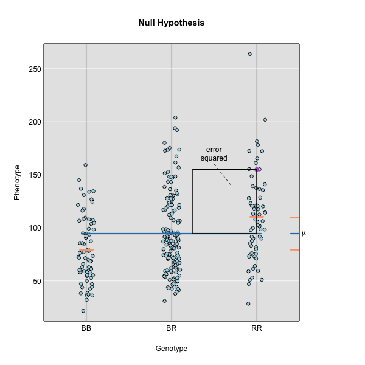
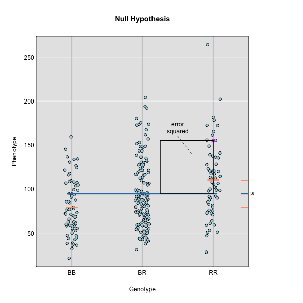

Content from Introduction to the Data Set
Last updated on 2024-11-13 | Edit this page
Estimated time: 20 minutes
Overview
Questions
- What data will we be using in this workshop?
Objectives
- Understand the experimental design of the data set.
- Understand the goals of the experiment.
Introduction
In the first part of this lesson, we will be analyzing data from a mouse experiment involving Type 2 diabetes (T2D). There are two types of diabetes: type 1, in which the immune system attacks insulin-secreting cells and prevents insulin production, and type 2, in which the pancreas makes less insulin and the body becomes less responsive to insulin.
 Created in
BioRender.com
Created in
BioRender.com
This study is from Tian et al and involves an intercross between the diabetes-resistant C57BL/6J (B6 or B) strain and the diabetes-susceptible BTBR T+ tf/J (BTBR or R) strain mice carrying a Leptinob/ob mutation.

The
This study measured insulin and glucose levels in mice at 10 weeks, at which time the mice were euthanized. After euthanasia, the authors harvested six tissues, adipose, gastrocnemius muscle, hypothalamus, pancreatic islets, kidney, and liver, and measured transcript levels via gene expression microarray.
In this study, we will analyze circulating insulin levels and pancreatic islet gene expression. We will map circulating insulin levels to identify genomic loci which influence insulin levels. We will then use SNPs that differ between C57BL/6J and BTBR and pancreatic islet gene expression data to identify candidate genes.
Challenge 1: Research question and study design
Turn to a partner and describe:
1. the research question that the study addresses, and
2. how the study is designed to address this question.
Share your description with your partner, and then listen to them describe their understanding of the study. When you are finished, write your responses into the collaborative document.
Key Points
- Leptinob/ob mice do now produce insulin and become obese due to overeating.
- This study crossed mice carrying the Leptinob/ob mutation in C57BL/6J and BTBR T+ tf/J.
- C57BL/6J mice are resistant to diabetes and BTBR mice are susceptible.
- By crossing these two strains, the authors aimed to identify genes which influence susceptibility to T2D.
Content from Input File Format
Last updated on 2024-11-13 | Edit this page
Estimated time: 25 minutes
Overview
Questions
- How are the data files formatted for qtl2?
- Which data files are required for qtl2?
- Where can I find sample data for mapping with the qtl2 package?
Objectives
- To specify which input files are required for qtl2 and how they should be formatted.
- To locate sample data for qtl mapping.
QTL mapping data consists of a set of tables of data: sample genotypes, phenotypes, marker maps, etc. These different tables are in different comma-separated value (CSV) files. In each file, the first column is a set of IDs for the rows, and the first row is a set of IDs for the columns. For example, the genotype data file will have individual IDs in the first column, marker names for the rest of the column headers.

The sample genotype file above shows two alleles: B and R. These represent the founder strains for an intercross, which are C57BL/6 (BB) and BTBR (RR) Tian et al. The B and R alleles themselves represent the haplotypes inherited from the parental strains C57BL/6 and BTBR.
For the purposes of learning QTL mapping, this lesson begins with an
intercross that has only 3 possible genotypes instead of 8 or 36. Once
we have learned how to use qtl2 for the simpler case, we
will advance to the most complex case involving mapping in DO mice.
R/qtl2 accepts the following files:
1. genotypes
2. phenotypes
3. phenotype covariates (i.e. tissue type, time points)
4. genetic map
5. physical map (optional)
6. control file (YAML or JSON format, not CSV).
We use both a genetic marker map and a physical map (if available). A sample from a genetic map of SNP markers is shown here.
A physical marker map provides location in bases rather than centiMorgans.

Numeric phenotypes are separate from the often non-numeric covariates.

Phenotype covariates are metadata describing the phenotypes. For example, in the case of a phenotype measured over time, one column in the phenotype covariate data could be the time of measurement. For gene expression data, we would have columns representing chromosome and physical position of genes, as well as gene IDs. The covariates shown below include sex and parental grandmother (pgm).

In addition to the set of CSV files with the primary data, we need a separate control file with various control parameters (or metadata), including the names of all of the other data files and the genotype codes used in the genotype data file. The control file is in a specific format using either YAML or JSON; these are human-readable text files for representing relatively complex data.

A big advantage of this control file scheme is that it greatly
simplifies the function for reading in the data. That function,
read_cross2(), has a single argument: the name
(with path) of the control file.
For further details, see the separate vignette on the input file format.
Challenge 1: What data does qtl2 need?
- Which data files are required by
qtl2?
- Which ones are optional?
- How should they be formatted?
- genotypes, phenotypes, genetic map
- physical map
- csv; JSON or YAML for control file
Sample data sets
In this lesson, we will not work with data sets included in the
qtl2 package, though you may want to explore them to learn
more. You can find out more about the sample data
files from the R/qtl2 web site. Zipped versions of these datasets
are included with the qtl2geno package and can be
loaded into R using the read_cross2() function. Additional
sample data sets, including data on Diversity Outbred (DO) mice, are
available at https://github.com/rqtl/qtl2data.
Challenge 2: Additional R/qtl2 datasets
Go to https://github.com/rqtl/qtl2data to view additional
sample data.
1). Find the Recla data and locate the phenotype data file. Open the
file by clicking on the file name. What is in the first column? the
first row?
2). Locate the genotype data file, click on the file name, and view the
raw data. What is in the first column? the first row?
3). Locate the covariates file and open it by clicking on the file name.
What kind of information does this file contain?
4). Locate the control file (YAML or JSON format) and open it. What kind
of information does this file contain?
1). What is in the first column of the phenotype file? Animal ID. The
first row? Phenotype variable names - OF_distance_first4, OF_distance,
OF_corner_pct, OF_periphery_pct, …
2). What is in the first column of the genotype file? marker ID. the
first row? Animal ID - 1,4,5,6,7,8,9,10, …
3). Locate the covariates file and open it. What kind of information
does this file contain? Animal ID, sex, cohort, group, subgroup, ngen,
and coat color.
4). Locate the control file (YAML or JSON format) and open it. What kind
of information does this file contain? Names of primary data files,
genotype and allele codes, cross type, description, and other
metadata.
Key Points
- QTL mapping data consists of a set of tables of data: genotypes, phenotypes, marker maps, etc.
- These different tables are in separate comma-delimited (CSV) files.
- In each file, the first column is a set of IDs for the rows, and the first row is a set of IDs for the columns.
- In addition to primary data, a separate file with control parameters (or metadata) in either YAML or JSON format is required.
- Published and public data already formatted for QTL mapping are available on the web.
- These data can be used as a model for formatting your own QTL data.
Content from Calculating Genotype Probabilities
Last updated on 2024-11-13 | Edit this page
Estimated time: 35 minutes
Overview
Questions
- How do I calculate QTL at positions between genotyped markers?
- How do I calculate QTL genotype probabilities?
- How do I calculate allele probabilities?
- How can I speed up calculations if I have a large data set?
Objectives
- To explain why the first step in QTL analysis is to calculate genotype probabilities.
- To calculate genotype probabilities.
The first task in QTL analysis is to calculate conditional genotype probabilities, given the observed marker data, at each putative QTL position. For example, the first step would be to determine the probabilities for genotypes BR and RR at the locus indicated below.
The calc_genoprob() function calculates QTL genotype
probabilities conditional on the available marker data. These are needed
for most of the QTL mapping functions. The result is returned as a list
of three-dimensional arrays (one per chromosome). Each 3d array of
probabilities is arranged as individuals \(\times\) genotypes \(\times\) positions.

 Notice that arrays in R require data to be all of the same type - all
numeric, all character, all Boolean, etc. If you are familiar with data
frames in R you know that you can mix different kinds of data in that
structure. The first column might contain numeric data, the second
column character data, the third Boolean (True / False), and so on.
Arrays won’t accept mixed data types though.
Notice that arrays in R require data to be all of the same type - all
numeric, all character, all Boolean, etc. If you are familiar with data
frames in R you know that you can mix different kinds of data in that
structure. The first column might contain numeric data, the second
column character data, the third Boolean (True / False), and so on.
Arrays won’t accept mixed data types though.
We’ll use the Attie
BL6/BTBR dataset from Tian et
al (an intercross) as an example. In this study, circulating insulin
levels were measured in an F2 cross between mouse strains C57BL/6J and
BTBTR T+
First, we will load in the qtl2 library, which provides the functions that we will use for QTL analysis.
R
library(qtl2)
The function read_cross2() has a single argument: the
name (with path) of the control file, or alternatively a zip file
containing all the required data. We read in the data with a JSON
control file like this:
R
cross <- read_cross2(file = 'data/attie_control.json')
We need the following block for the site to build on Github. The students do not need to see or run the next block.
To load your own data from your machine, you would use the file path
to your data files. For example, if the file path to your data files is
/Users/myUserName/qtlProject/data, the command to load your
data would look like this:
R
myQTLdata <- read_cross2(file = "/Users/myUserName/qtlProject/data/myqtldata.json" )
The JSON file contains all control information for your data, including names of data files, cross type, column specifications for sex and cross information, and more. This can also be in YAML format. Alternatively, all data files can be zipped together for loading.
R
myQTLdata <- read_cross2(file = "/Users/myUserName/qtlProject/data/myqtldata.zip" )
Back to the BTBR data. Now look at a summary of the cross data and the names of each variable within the data.
R
summary(cross)
OUTPUT
Object of class cross2 (crosstype "f2")
Total individuals 490
No. genotyped individuals 490
No. phenotyped individuals 490
No. with both geno & pheno 490
No. phenotypes 3
No. covariates 8
No. phenotype covariates 0
No. chromosomes 20
Total markers 2057
No. markers by chr:
1 2 3 4 5 6 7 8 9 10 11 12 13 14 15 16 17 18 19 X
156 135 157 126 125 102 109 91 93 123 124 116 116 91 102 66 60 95 50 20 R
names(cross)
OUTPUT
[1] "crosstype" "geno" "gmap" "pmap" "pheno"
[6] "covar" "is_x_chr" "is_female" "cross_info" "alleles" Challenge 1
1). How many mice are in this study?
2). How many phenotypes are there?
3). How many markers?
4). How many markers are on chr 11?
The output of summary(cross) provides this
information.
1). There are 490 individuals in the cross.
2). 3 phenotypes
3). 2,057 markers
4). 124 markers on chromosome 11
Have a look at the markers listed in the genetic map,
gmap. Markers are listed by chromosome and described by cM
position. View only the markers on the first two chromosomes.
R
head(cross$gmap, n=1)
OUTPUT
$`1`
rs13475697 rs3681603 rs13475703 rs13475710 rs6367205 rs13475716 rs13475717
0.1881141 0.1920975 0.4167755 0.6488793 0.6555814 0.6638576 0.6676198
rs13475719 rs13459050 rs3680898 rs13475727 rs13475728 rs13475729 rs13475731
0.6711377 0.6749344 0.6775292 1.8149573 1.9596637 2.3456569 2.7186389
rs13475737 rs13475744 rs6397513 rs13475747 rs13475748 rs13475749 rs13475750
3.1059517 3.8222865 4.3094607 4.3120150 4.5098582 4.8154609 4.8853505
rs13475751 rs13475752 rs13475762 rs13475764 rs13475765 rs13475768 rs13475769
4.8869793 4.8902179 7.2954871 8.2102887 8.3708197 8.7178703 8.8859153
rs13475771 rs6384194 rs13475790 rs3676270 rs13475794 rs13475801 rs4222269
9.1374722 9.9295192 9.9970634 10.1508878 10.3962716 11.5981956 11.9606369
rs6387241 rs13475822 rs13475824 rs13475826 rs13475827 rs13475834 rs13475880
16.8770742 16.9815396 17.4434784 18.0866148 18.6276972 19.2288050 27.4056813
rs13475883 rs6239834 rs3162895 rs6212146 rs3022802 rs13475899 rs13475900
28.4641674 30.8427150 31.1526514 31.2751278 31.3428706 31.8493556 31.8518088
rs13475906 rs3022803 rs13475907 rs13475909 rs13475912 rs6209698 rs13475929
32.2967145 32.3074644 32.3683291 32.8001894 33.6026526 36.5341646 37.6881435
rs13475931 rs13475933 rs13475934 rs4222476 rs13475939 rs8253473 rs13475941
37.7429827 38.0416271 38.0430095 38.9647582 39.4116688 39.4192277 39.4871064
rs13475944 rs13475947 rs13475948 rs13475950 rs13475951 rs13475954 rs13475955
39.7672829 40.2599440 40.3380113 40.3417592 40.3439501 41.1407252 41.2887176
rs13475963 rs13475966 rs13475967 rs13475970 rs13475960 rs6250696 rs13475973
42.4744416 42.5667702 42.9736574 43.1427994 43.5985261 43.5992946 43.6014053
rs3691187 rs13475988 rs13475991 rs13476023 rs13476024 rs3684654 rs6274257
44.6237384 45.7855528 46.0180221 47.8579278 47.8600317 48.2423958 48.9612178
rs13476045 rs13476049 rs6319405 rs13476050 rs13476051 rs13476054 rs13476057
49.2018340 49.3701384 49.4261039 49.4275718 49.4323558 49.4972616 49.5031830
rs13476059 rs13476060 rs13476062 rs13476066 rs13476067 rs6259837 rs13476080
49.5084008 49.5113545 49.6085043 49.6644819 50.1779477 50.8256056 51.0328603
rs6302966 rs13476085 rs13476089 rs3717360 rs13476090 rs6248251 rs13476091
51.3659553 51.6974451 52.3869798 52.3903517 52.3936241 52.4228715 52.5787388
rs3088725 rs3022832 rs4222577 rs13476100 rs6263067 rs8256168 rs6327099
53.4044231 53.4129004 53.4189013 54.3267003 54.4193890 55.1459517 55.3274320
rs13476111 rs13476119 rs8236484 rs8270838 rs8236489 rs13476129 rs13476134
55.9050491 56.8936305 56.9852502 57.1870637 58.0248893 58.7605079 59.5401544
rs13476135 rs13476137 rs13476138 rs13476140 rs13476148 rs6202860 rs13476158
59.5426193 59.6023794 60.3355828 60.3439598 61.1791787 61.9905512 61.9930265
rs13476163 rs13476177 rs13476178 rs13476183 rs13476184 rs6194543 rs13476196
62.0039607 62.6243588 62.6269118 63.8101331 64.0856907 66.4047817 66.7425394
rs13476201 rs3685700 rs3022846 rs13476210 rs13476214 rs13459163 rs4222816
67.2638714 68.7230251 68.7246243 69.1209547 70.1550813 75.5548371 75.5593190
rs4222820 rs3090340 rs8245949 rs13476242 rs13476251 rs13476254 rs6383012
75.5593202 75.5637846 76.7508053 79.0157673 79.7644000 79.8248805 85.3173344
rs13476279 rs6348421 rs13476290 rs13476300 rs13476302 rs13476304 rs3669814
86.7653503 88.2128991 89.0565541 94.6215368 94.8227821 94.8269227 95.5413280
rs13501301 rs13476316
96.0784002 96.9960494 Next we use calc_genoprob() to calculate the QTL
genotype probabilities.
R
probs <- calc_genoprob(cross = cross,
map = cross$gmap,
error_prob = 0.002)
The argument error_prob supplies an assumed genotyping
error probability of 0.002. If a value for error_prob is
not supplied, the default probability is 0.0001.
Recall that the result of calc_genoprob,
probs, is a list of three-dimensional arrays (one per
chromosome).
R
names(probs)
OUTPUT
[1] "1" "2" "3" "4" "5" "6" "7" "8" "9" "10" "11" "12" "13" "14" "15"
[16] "16" "17" "18" "19" "X" Each three-dimensional array of probabilities is arranged as individuals \(\times\) genotypes \(\times\) positions. Have a look at the names of each of the three dimensions for chromosome 19.
R
head(dimnames(probs$`19`)[[1]])
OUTPUT
[1] "Mouse3051" "Mouse3551" "Mouse3430" "Mouse3476" "Mouse3414" "Mouse3145"R
dimnames(probs$`19`)[2]
OUTPUT
[[1]]
[1] "BB" "BR" "RR"R
dimnames(probs$`19`)[3]
OUTPUT
[[1]]
[1] "rs4232073" "rs13483548" "rs13483549" "rs13483550" "rs13483554"
[6] "rs13483555" "rs3090321" "rs3090137" "rs6309315" "rs13483577"
[11] "rs3090325" "rs13483579" "rs13483584" "rs13483586" "rs13483587"
[16] "rs13483589" "rs13483592" "rs13483593" "rs6344448" "rs13483594"
[21] "rs13483595" "rs3705022" "rs13483609" "rs13483612" "rs13483648"
[26] "rs13483650" "rs13483654" "rs13483658" "rs13483660" "rs13483664"
[31] "rs13483666" "rs13483667" "rs13483670" "rs8275553" "rs8275912"
[36] "rs13483677" "rs13483679" "rs13483680" "rs13483681" "rs3660143"
[41] "rs13483682" "rs13483683" "rs13483685" "rs13483686" "rs6355398"
[46] "rs4222106" "rs13483690" "rs13483693" "rs13483695" "rs13483699"View the first three rows of genotype probabilities for the first genotyped marker on chromosome 19.
R
(probs$`19`)[1:5, , "rs4232073"]
OUTPUT
BB BR RR
Mouse3051 1.317728e-11 1.235895e-07 9.999999e-01
Mouse3551 9.999840e-01 1.595361e-05 5.027172e-08
Mouse3430 1.317728e-11 1.235895e-07 9.999999e-01
Mouse3476 9.999999e-01 1.235895e-07 1.317728e-11
Mouse3414 6.179474e-08 9.999999e-01 6.179474e-08We can also view the genotype probabilities using plot_genoprob. The arguments to this function specify:
-
probs: the genotype probabilities, -
map: the marker map, -
ind: the index of the individual to plot, -
chr: the index of the chromosome to plot.
R
plot_genoprob(probs = probs,
map = cross$pmap,
ind = 1,
chr = 19,
main = rownames(probs[['19']])[1])

The coordinates along chromosome 19 are shown on the horizontal axis and the three genotypes are shown on the vertical axis. Higher genotype probabilities are plotted in darker shades. This mouse has a RR genotype on the proximal end of the chromosome and transitions to BR.

Challenge 2
1). Load a second dataset from the qtl2data repository. Locate
the BXD
directory and load the data directly from the web using this code
given at the bottom of the ReadMe.md file.
file <- paste0("https://raw.githubusercontent.com/rqtl/", "qtl2data/main/BXD/bxd.zip").
bxd <- read_cross2(file)
2). How many individuals were in the study? How many phenotypes? How many markers?
3). Calculate genotype probabilities and save the results to an
object called bxdpr. View the genotypes for the first three
markers on chromosome 1 for the first five individuals.
1).
file <- paste0("https://raw.githubusercontent.com/rqtl/", "qtl2data/main/BXD/bxd.zip").bxd <- read_cross2(file)
2). summary(bxd) gives 198 individuals, 5,806 phenotypes
and 7,320 markers.
3). bxdpr <- calc_genoprob(cross = bxd, map = bxd$gmap)
followed by(bxdpr$1)[1:5, , 1:3]
Challenge 3
Plot the genotype probabilities for individual number 3 for chromosome 1.
plot_genoprob(probs = bxdpr, map = bxd$pmap, ind = 3, chr = 1, main = rownames(bxdpr[['1']])[3])
Parallel calculations (optional) To speed up the
calculations with large datasets on a multi-core machine, you can use
the argument cores. With cores=0, the number
of available cores will be detected via
parallel::detectCores(). Otherwise, specify the number of
cores as a positive integer.
R
probs <- calc_genoprob(cross = iron,
map = map,
error_prob = 0.002,
cores = 4)
Allele probabilities (optional) The genome scan
functions use genotype probabilities as well as a matrix of phenotypes.
If you wished to perform a genome scan via an additive allele model, you
would first convert the genotype probabilities to allele probabilities,
using the function genoprob_to_alleleprob().
R
apr <- genoprob_to_alleleprob(probs = probs)
Key Points
- The first step in QTL analysis is to calculate genotype probabilities.
- Calculate genotype probabilities between genotyped markers with
calc_genoprob().
Content from Performing a Genome Scan
Last updated on 2024-11-13 | Edit this page
Estimated time: 60 minutes
Overview
Questions
- How do I perform a genome scan?
- How do I plot a genome scan?
- How do additive covariates differ from interactive covariates?
Objectives
- Map one trait using additive covariates.
- Map the sample trait using additive and interactive covariates.
- Plot a genome scan.
The freely available chapter on single-QTL analysis from Broman and Sen’s A Guide to QTL Mapping with R/qtl describes different methods for QTL analysis. We will present two of these methods here - marker regression and Haley-Knott regression. The chapter provides the statistical background behind these and other QTL mapping methods.
Linear regression can be employed to identify presence of QTL in a cross. To identify QTL using regression, we compare the fit for two models: 1) the null hypothesis that there are no QTL anywhere in the genome; and 2) the alternative hypothesis that there is a QTL near a specific position. A sloped line indicates that there is a difference in mean phenotype between genotype groups, and that a QTL is present. A line with no slope indicates that there is no difference in mean phenotype between genotype groups, and that no QTL exists. Regression aims to find the line of best fit to the data.

To find the line of best fit, the residuals or errors are calculated, then squared for each data point. A residual, also known as an error, is the distance from the line to a data point.
 

The line of best fit will be the one that minimizes the sum of squared residuals, which maximizes the likelihood of the data.
Marker regression produces a LOD (logarithm of odds) score comparing the null hypothesis to the alternative. The LOD score is calculated using the sum of squared residuals (RSS) for the null and alternative hypotheses. The LOD score is the difference between the log10 likelihood of the null hypothesis and the log10 likelihood of the alternative hypothesis. It is related to the regression model above by identifying the line of best fit to the data.
LOD = \(n/2 \times log10(RSS_0/RSS_1)\)
A higher LOD score indicates greater likelihood of the alternative hypothesis. A LOD score closer to zero favors the null hypothesis.
Marker regression can identify the existence and effect of a QTL by comparing means between groups, however, it requires known marker genotypes and can’t identify QTL in between typed markers. To identify QTL between typed markers, we use Haley-Knott regression. After calculating genotype probabilities, we can regress the phenotypes for animals of unknown genotype on these conditional genotype probabilities (conditional on known marker genotypes). In Haley-Knott regression, phenotype values can be plotted and a regression line drawn through the phenotype mean for the untyped individuals.
As shown by the green circle in the figure, an individual of unknown genotype is placed between known genotypes according to the probability of its genotype being BB or BR. In this case, the probability of this individual having genotype BB is 0.6, and the probability of having genotype BR is 0.4.
To perform a genome scan by Haley-Knott regression (Haley and Knott
1992), use the function scan1(). scan1()
takes as input the genotype probabilities, a matrix of phenotypes, and
then optional additive and interactive covariates. Another option is to
provide a vector of weights.
Additive Genome Scan
There are two potential covariates in the Attie data set. Let’s look
at the top of the covariates in the cross object.
R
head(cross$covar)
OUTPUT
Sex pgm adipose_batch gastroc_batch hypo_batch islet_batch
Mouse3051 Male 1 12/19/2007 8/11/2008 11/26/2007 11/28/2007
Mouse3551 Male 1 12/19/2007 8/12/2008 11/27/2007 12/03/2007
Mouse3430 Male 1 12/19/2007 8/12/2008 11/27/2007 12/03/2007
Mouse3476 Male 1 12/19/2007 8/12/2008 11/27/2007 12/03/2007
Mouse3414 Male 1 12/18/2007 8/11/2008 11/26/2007 11/28/2007
Mouse3145 Female 1 12/19/2007 8/11/2008 NA 11/28/2007
kidney_batch liver_batch
Mouse3051 07/15/2008 other
Mouse3551 07/16/2008 12/10/2007
Mouse3430 07/15/2008 12/05/2007
Mouse3476 07/16/2008 12/05/2007
Mouse3414 07/15/2008 12/05/2007
Mouse3145 07/15/2008 12/10/2007Sex is a potential covariate. It is a good idea to
always include sex in any analysis. Even if you perform an ANOVA and
think that sex is not important, it doesn’t hurt to add in one extra
degree of freedom to your model. Examples of other covariates might be
age, diet, treatment, or experimental batch. It is worth taking time to
identify covariates that may affect your results.
First, we will make sex a factor, which is the term that
R uses for categorical variables. This is required for the next function
to work correctly. Then we will use model.matrix to create
a matrix of “dummy” variables which encode the sex of each mouse.
R
cross$covar$Sex <- factor(cross$covar$Sex)
addcovar <- model.matrix(~Sex, data = cross$covar)[,-1, drop = FALSE]
When we perform a genome scan with additive covariates, we are searching for loci that have the same effect in both covariate groups. In this case, we are searching for loci that affect females and males in the same way.

In the figure above, we plotted simulated phenotype values versus the genotypes BB, BR and RR. Each point represents one mouse, with females shown in red and males in blue. We show the sex effect at the mean of each sex group. The difference between sexes is the same for all three genotype groups. This is different from the QTL effect, which is the difference between the mean of each sex and the homozygous group(s).
When we add sex into the model as an additive covariate, we regress the sex effect out of the phenotype data and then estimate the overall QTL effect.

In the figure above, we have plotted the same simulated phenotype with sex regressed out. Now the female and male means are the same, but the QTL effect remains.
With that introduction to additive covariates, let’s map the insulin phenotype.
First, we will make a data.frame called insulin
so that we don’t have to type quite as many characters every time that
we map insulin.
R
insulin <- cross$pheno[,'log10_insulin_10wk', drop = FALSE]
Next, we will use the qtl2 function scan1 to map insulin
values across the genome with sex as an additive covariate.
R
lod_add <- scan1(genoprobs = probs,
pheno = insulin,
addcovar = addcovar)
On a multi-core machine, you can get some speed-up via the
cores argument, as with calc_genoprob() and
calc_kinship().
R
lod_add <- scan1(genoprobs = probs,
pheno = insulin,
addcovar = addcovar,
cores = 4)
The output of scan1() is a matrix of LOD scores, with
markers in rows and phenotypes in columns.
Take a look at the first ten rows of the scan object. The numerical values are the LOD scores for the marker named at the beginning of the row. LOD values are shown for circulating insulin.
R
head(lod_add, n = 10)
OUTPUT
log10_insulin_10wk
rs13475697 0.04674829
rs3681603 0.04674829
rs13475703 0.04680494
rs13475710 0.12953382
rs6367205 0.13734728
rs13475716 0.13735534
rs13475717 0.13735534
rs13475719 0.13735534
rs13459050 0.13735534
rs3680898 0.13735541The function plot_scan1() can be used to plot the LOD
curves. If you have more than one phenotype, use the
lodcolumn argument to indicate which column to plot. In
this case, we have only one column and plot_scan will plot
it by default.
R
plot_scan1(lod_add,
map = cross$pmap,
main = 'log(insulin): 10 weeks')

The LOD plot for insulin shows several peaks, with the largest peak on chromosome 2. There are smaller peaks on other chromosomes. Which of these peaks is significant, and why? We’ll evaluate the significance of genome scan results in a later episode in Finding Significant Peaks via Permutation.

Challenge 1: Find the marker with the highest LOD.
- What is the highest LOD score for insulin?
- Which marker does the highest LOD score occur at?
- You can find the maximum LOD score using the
maxfunction.
R
max(lod_add[,'log10_insulin_10wk'])
OUTPUT
[1] 6.668835- You can find the marker name with the maximum LOD score using the
which.maxfunction.
R
rownames(lod_add)[which.max(lod_add[,'log10_insulin_10wk'])]
OUTPUT
[1] "rs13476803"Challenge 2: Find the chromosome and position of the maximum LOD score.
Look up the qtl2 function find_markerpos in
the Help and find the chromosome and Mb position of the marker with the
maximum LOD.
R
max_mkr <- rownames(lod_add)[which.max(lod_add[,'log10_insulin_10wk'])]
find_markerpos(cross = cross, markers = max_mkr)
OUTPUT
chr gmap pmap
rs13476803 2 67.07116 138.9448Challenge 3: Plot the LOD on specific chromosomes.
The plot_scan1 function has a chr argument
that allows you to only plot specific chromosomes. Use this to plot the
insulin LOD on chromosomes 2, 7, 12, and 19. Add a title to the plot
using the main argument, which is part of the basic
plotting function.
R
plot_scan1(lod_add, map = cross$pmap, chr = c(2, 7, 12, 19),
main = "log(insulin): 10 weeks")
Interactive Genome Scan
Above, we mapped insulin levels using sex as an additive covariate and searched for loci where both sexes had the same QTL effect. But what if the two sexes have different effects? You might think that we could map each sex separately. But this approach reduces your sample size, and hence statistical power, in each sex. A better way is to use all of the data and map with sex as an additive and an interactive covariate. Mapping with an interactive covariate allows each sex to have different effects. We do this by including sex as an interactive covariate in the genome scan.

In the figure above, female (red) and male (blue) phenotypes are plotted versus the three genotypes. In females, there is no QTL effect because the mean values in each genotype group are not different. In males, there is a QTL effect because the mean in each genotype group changes.
You should always include an interactive covariate as an additive covariate as well. In this case, we only have sex as a covariate, so we can use the additive covariate matrix for the interactive covariate. For clarity, we will make a copy and name it for the interactive covariates.
R
intcovar = addcovar
R
lod_int <- scan1(genoprobs = probs,
pheno = insulin,
addcovar = addcovar,
intcovar = intcovar)
R
plot_scan1(x = lod_int,
map = cross$pmap,
main = 'log(insulin): 10 weeks: Sex Interactive')

It is difficult to tell if there is a difference in LOD scores
between the additive and interactive scans. To resolve this, we can plot
both genome scans in the same plot using the add = TRUE
argument. We will also color the additive scan in blue.
R
plot_scan1(x = lod_int,
map = cross$pmap,
main = 'log(insulin): 10 weeks')
plot_scan1(x = lod_add,
map = cross$pmap,
col = 'blue',
add = TRUE)
legend(x = 1000, y = 7.6, legend = c('Additive', 'Interactive'),
col = c('blue', 'black'), lwd = 2)

It is still difficult to tell whether any peaks differ by sex. Another way to view the plot is to plot the difference between the interactive and additive scans.
R
plot_scan1(x = lod_int - lod_add,
map = cross$pmap,
main = 'log10(insulin): Interactive - Additive')

While it was important to look at the effect of sex on the trait, in this experiment, there do not appear to be any sex-specific peaks. Without performing a formal test, we usually look for peaks with a LOD greater than 3 and there do not appear to be any in this scan.
Challenge 4: Why didn’t we map and plot males and females separately?
Map and plot the males and females separately. Now explain why we didn’t do things this way.
Key Points
- A qtl2 genome scan requires genotype probabilities and a phenotype matrix.
- The output from a genome scan contains a LOD score matrix, map positions, and phenotypes.
- LOD curve plots for a genome scan can be viewed with plot_scan1().
- A genome scan using sex as an additive covariate searches for QTL which affect both sexes.
- A genome scan using sex as an interactive covariate searches for QTL which affect each sex differently.
Content from Calculating A Kinship Matrix
Last updated on 2024-11-13 | Edit this page
Estimated time: 30 minutes
Overview
Questions
- Why would I calculate kinship between individuals?
- How do I calculate kinship between individuals?
- What does a kinship matrix look like?
Objectives
- Explain why and when kinship calculation matters in mapping.
- Create a kinship matrix for individuals.
Population structure and kinship are common confounding factors in genome-wide association studies (GWAS), case-control studies, and other study types in genetics. They create false positive associations between genotype and phenotype at genetic markers that differ in genotype frequencies between subpopulations due to genetic relatedness between samples. Simple association tests assume statistical independence between individuals. Population structure and kinship confound associations when phenotype covariance between individuals results from genetic similarity. Accounting for relatedness between individuals helps to distinguish true associations from false positives generated by population structure or kinship.
As an example see the table below for phenotype and genotype frequencies between two subpopulations in a case-control study.
| subpop1 | subpop2 | overall pop | |
|---|---|---|---|
| frequency | 0.5 | 0.5 | 1 |
| probability of AA genotype | 0.1 | 0.9 | 0.5 |
| probability of disease | 0.9 | 0.1 | 0.5 |
| probability of disease & AA | 0.09 | 0.09 | 0.09 |
The full population consists of two equally represented subpopulations. In the overall population, the probability of the AA genotype is 0.5, and the probability of disease is also 0.5. The joint probability of both disease and AA genotype in the population (0.09) is less than either the probability of disease (0.5) or the probability of the AA genotype (0.5) alone, and is considerably less than the joint probability of 0.25 that would be calculated if subpopulations weren’t taken into account. In a case-control study that fails to recognize subpopulations, most of the cases will come from subpopulation 1 since this subpopulation has a disease probability of 0.9. However, this subpopulation also has a low probability of the AA genotype. So a false association between AA genotype and disease would occur because only overall population probabilities would be considered.
Kinship Calculation
In the B6/BTBR cross, we have three possible genotypes: BB, BR, and RR. Suppose that we look at the genotypes of two mice and estimate their kinship. To do this, we select the first allele from mouse 1 and get the probability of picking the same allele from mouse 2. Then we do the same procedure with the second allele and take the mean. This calculates the mean allele-sharing at that marker. We do this for all markers and take the overall mean.
Let’s look at an example. In the table below, we have listed four markers and their genotypes in mouse 1 (M1) and mouse 2 (M2). At each marker, we applied the procedure above and recorded the allele-sharing. Then we took the mean and found that these two mice have a kinship value of 0.5.
| marker | M1 | M2 | allele-sharing |
|---|---|---|---|
| 1 | BB | BB | 1.0 |
| 2 | BB | BR | 0.5 |
| 3 | BB | RR | 0.0 |
| 4 | BR | BR | 0.5 |
| — | – | – | — |
| All | – | – | 0.5 |
Challenge 1: Calculate the kinship of the following two sets of mice.
| marker | M1 | M2 |
|---|---|---|
| 1 | BB | RR |
| 2 | BB | RR |
| 3 | BB | RR |
| 4 | BB | BR |
| marker | M1 | M2 |
|---|---|---|
| 1 | BB | BR |
| 2 | BB | BR |
| 3 | RR | RR |
| 4 | RR | RR |
| marker | M1 | M2 | allele-sharing |
|---|---|---|---|
| 1 | BB | RR | 0.0 |
| 2 | BB | RR | 0.0 |
| 3 | BB | RR | 0.0 |
| 4 | BB | BR | 0.5 |
| — | – | – | — |
| All | – | – | 0.125 |
| marker | M1 | M2 | allele-sharing |
|---|---|---|---|
| 1 | BB | BR | 0.5 |
| 2 | BB | BR | 0.5 |
| 3 | RR | RR | 1.0 |
| 4 | RR | RR | 1.0 |
| — | – | – | — |
| All | – | – | 0.75 |
Linear mixed models (LMMs) consider genome-wide similarity between
all pairs of individuals to account for population structure, known
kinship and unknown relatedness. They model the covariance between
individuals. Linear mixed models in association mapping studies can
successfully correct for genetic relatedness between individuals in a
population by incorporating kinship into the model. To perform a genome
scan by a linear mixed model, accounting for the relationships among
individuals (in other words, including a random polygenic effect),
you’ll need to calculate a kinship matrix for the individuals. This is
accomplished with the calc_kinship() function. It takes the
genotype probabilities as input.
R
kinship <- calc_kinship(probs = probs)
Take a look at the kinship values calculated for the first 5 individuals.
R
kinship[1:5, 1:5]
OUTPUT
Mouse3051 Mouse3551 Mouse3430 Mouse3476 Mouse3414
Mouse3051 0.737 0.501 0.535 0.520 0.510
Mouse3551 0.501 0.758 0.515 0.512 0.499
Mouse3430 0.535 0.515 0.749 0.458 0.493
Mouse3476 0.520 0.512 0.458 0.749 0.434
Mouse3414 0.510 0.499 0.493 0.434 0.696We can also look at the first 50 mice in the kinship matrix.
R
n_samples <- 50
heatmap(kinship[1:n_samples, 1:n_samples], symm = TRUE)

The mice are listed in the same order on both sides of the matrix. The comb-like structures are called “dendrograms” and they indicate how the mice are clustered together. Each cell represents the degree of allele sharing between mice. Red colors indicate higher kinship and yellow colors indicate lower kinship. Each mouse is closely related to itself, so the cells along the diagonal tend to be darker than the other cells. You can see some evidence of related mice, possibly siblings, in the orange-shaded blocks along the diagonal.
By default, the genotype probabilities are converted to allele
probabilities, and the kinship matrix is calculated as the proportion of
shared alleles. Also by default we omit the X chromosome and only use
the autosomes. To include the X chromosome, use
omit_x=FALSE.
On a multi-core machine, you can get some speed-up via the
cores argument, as with calc_genoprob().
R
kinship <- calc_kinship(probs = probs,
cores = 4)
Challenge 2: What is a Kinship Matrix?
Think about what a kinship matrix is and what it represents. Share your understanding with a neighbor. Write your explanation in the collaborative document or in your own personal notes.
Challenge 3: Mean Value in Kinship Matrix
What is the mean kinship value of all mice? Can you explain why the value is the number that you get? Think about the three possible genotypes in the cross and how they compare to each other.
R
mean(kinship)
OUTPUT
[1] 0.501The mean kinship between the mice in the cross is 0.5. All of the mice were derived from F1 parents created from two inbred strains. The kinship calculation compares the number of identical alleles between mice at each marker. On average, each mouse carries 50% B alleles and 50% R alleles. So the mean allele sharing is 0.5.
Challenge 4: Kinship of a Mouse with Itself
Look at the values in the kinship matrix. What is the kinship value of each mouse with itself? Why isn’t this equal to 1?
The kinship of a mouse with itself will only be 1 if the mouse is homozygous at every marker. Since the mice in this study are F2s, they will have genomes that are around 50% heterozygous. The variation in heterozygosity affects the actual kinship values, but, on average, we expect self-kinship to be 0.75 because half of the genome is homozygous and contributes values of 1, and half of the genome is heterozygous and contributes values of 0.5. So \((0.5 \times 1) + (0.5 \times 0.5) = 0.75\).
This is shown in the plot below of homozygosity versus kinship. There is a clear linear relationship between the two values and at 0.5 homozygosity, the self-kinship values is 0.75. The slope of the line is 0.5.
R
# 1 & 3 are the encodings for the two homozygous genotypes
homo <- sapply(cross$geno,
function(z) {
rowSums(z == 1 | z == 3)
})
homo <- rowSums(homo) / sum(n_mar(cross))
df <- data.frame(id = rownames(cross$geno[[1]]),
homo = homo,
kinship = diag(kinship))
df |>
ggplot(aes(homo, kinship)) +
geom_point(size = 2) +
labs(title = "Homozygosity versus Self-Kinship",
x = "Homozygosity",
y = "Self-Kinship") +
theme(text = element_text(size = 20))

R
rm(homo, df)
Key Points
- Kinship matrices account for relationships among individuals.
- Kinship is calculated as the proportion of shared alleles between individuals.
- Kinship calculation is a precursor to a genome scan via a linear mixed model.
Content from Performing a genome scan with a linear mixed model
Last updated on 2024-11-13 | Edit this page
Estimated time: 45 minutes
Overview
Questions
- How do I use a linear mixed model in a genome scan?
- How do different mapping and kinship calculation methods differ?
Objectives
- Create a genome scan with a linear mixed model.
- Compare LOD plots for Haley-Knott regression and linear mixed model methods.
- Compare LOD plots for the standard kinship matrix with the leave-one-chromosome-out (LOCO) method.
Genetic mapping in mice presents a good example of why accounting for population structure is important.

Laboratory mouse strains are descended from a small number of founders (fancy mice) and went through several population bottlenecks.

Wild-derived strains are not descended from fancy mice and don’t share the same history as laboratory strains.
Issues of population structure and differing degrees of genetic relatedness between mice are addressed using linear mixed models (LMM). LMMs consider genome-wide similarity between all pairs of individuals to account for population structure, known kinship and unknown relatedness. LMMs in mapping studies can successfully adjust for genetic relatedness between individuals in a population by incorporating kinship into the model. Earlier we calculated a kinship matrix for input to a linear mixed model to account for relationships among individuals. For a current review of mixed models in genetics, see Sul et al, PLoS Genetics, 2018.
Simple linear regression takes the form:
\(y = \mu + \beta G + \epsilon\)
which describes a line with slope \(\beta\) and y-intercept \(\mu\). The error (or residual) is represented by \(\epsilon\).
To model the relationship between the phenotype \(y\) and the genotypes at one marker, we use:
\(y_j = \mu + \beta_k G_{jk} + \epsilon_j\)
where \(y_j\) is the phenotype of the \(j\)th individual, \(\mu\) is the mean phenotype value, \(\beta_k\) is the effect of the \(k\)th genotype, \(G_{jk}\) is the genotype for individual \(j\), and \(\epsilon_j\) is the error for the \(j\)th individual. In the figure below, \(\mu\) equals 94.6 and \(\beta\) equals 15 for the alternative hypothesis (QTL exists). This linear model is \(y\) = 94.6 + 15\(G\) + \(\epsilon\). The model intersects the genotype groups at their group means. In contrast, the null hypothesis would state that there is no difference in group means (no QTL anywhere). The linear model for the null hypothesis would be \(y\) = 94.6 + 0\(G\) + \(\epsilon\). This states that the phenotype is equal to the combined mean (94.6), plus some error (\(\epsilon\)). In other words, genotype doesn’t affect the phenotype.
The linear models above describe the relationship between genotype and phenotype but are inadequate for describing the relationship between genotype and phenotype in large datasets. They don’t account for relatedness among individuals. In real populations, the effect of a single genotype is influenced by many other genotypes that affect the phenotype. A true genetic model takes into account the effect of all variants on the phenotype.
To model the phenotypes of all individuals in the data, we can adapt the simple linear model to include all individuals and their variants so that we capture the effect of all variants shared by individuals on their phenotypes.
\(y=\mu+\sum_{i=1}^M{\beta_iG_i}+\epsilon\)
Now, \(y\) represents the phenotypes of all individuals. The effect of the \(i\)th genotype on the phenotype is \(\beta_i\), the mean is \(\mu\) and the error is \(\epsilon\). Here, the number of genotypes is M.
To model the effect of all genotypes and to account for relatedness, we test the effect of a single genotype while bringing all other genotypes into the model.
\(y=\mu + \beta_kG_k +\sum_{i\neq k}^{M}\beta_iG_i + \epsilon\)
\(\beta_k\) is the effect of the genotype \(G_k\), and \(\sum_{i\neq k}^{M}\beta_iG_i\) sums the effects across all markers (M) of all other genotypes except genotype \(k\). For the leave one chromosome out (LOCO) method, \(\beta_kG_k\) is the effect of genotypes on chromosome \(k\), and \(\beta_iG_i\) represents the effects of genotypes on all other chromosomes.
If the sample contains divergent subpopulations, SNPs on different chromosomes will be correlated because of the difference in allele frequencies between subpopulations caused by relatedness. To correct for correlations between chromosomes, we model all genotypes on the other chromosomes when testing for the association of a SNP.
First, we will create a single kinship matrix using all of the genotype probabilities on all chromosomes.
R
kinship_all <- calc_kinship(probs = probs,
type = "overall")
To perform a genome scan using a linear mixed model you also use the
function scan1; you just need to provide the argument
kinship, a kinship matrix (or, for the LOCO method, a list
of kinship matrices).
R
lod_add_all <- scan1(genoprobs = probs,
pheno = insulin,
kinship = kinship_all,
addcovar = addcovar)
Again, on a multi-core machine, you can get some speed-up using the
cores argument.
R
lod_add_all <- scan1(genoprobs = probs,
pheno = insulin,
kinship = kinship_all,
addcovar = addcovar,
cores = 4)
Let’s plot the insulin genome scan using the overall kinship matrix.
R
plot_scan1(x = lod_add,
map = cross$pmap,
col = 'black',
main = "log10(insulin): Kinship Comparison")
plot_scan1(x = lod_add_all,
map = cross$pmap,
col = 'blue',
add = TRUE)
legend(x = 1000, y = max(lod_add), legend = c('No kinship', 'Overall kinship'),
col = c('black', 'blue'), lwd = 2)

How did the LOD scores change? Did they increase or decrease? In general, the LOD scores decreased. In some cases, the LOD score decreased drastically. Why would this happen?
To answer this, we have to think back to the mapping model that we are using.
\(y=\mu + \beta_kG_k +\sum_{i\neq k}^{M}\beta_iG_i + \epsilon\)
In this model, we explicitly excluded the current marker from the kinship calculation. However, when we calculated the kinship matrix above, we used ALL of the markers. This means that we have put the current marker \(k\) into the model twice. This causes a loss of power which has been reported in Yang et al., Nat. Gen., 2014.
In order to address this issue, we could remove the current marker from the calculation. But this would mean that we would have to calculate a different kinship matrix for every marker. As a compromise, researchers create a different kinship matrix for each chromosome which uses all of the markers except those on the current chromosome. For example, to create a kinship matrix to use on chromosome 1, we would use the markers on chromosomes 2 through X. This is called the Leave One Chromosome Out (LOCO) method.
In order to use the LOCO method (scan each chromosome using a kinship
matrix that is calculated using data from all other chromosomes), use
type="loco" in the call to calc_kinship().
R
kinship_loco <- calc_kinship(probs = probs,
type = "loco")
For the LOCO (leave one chromosome out) method, provide the list of
kinship matrices as obtained from calc_kinship() with
type="loco".
R
lod_add_loco <- scan1(genoprobs = probs,
pheno = insulin,
kinship = kinship_loco,
addcovar = addcovar)
To plot the results, we again use plot_scan1().
Here is a plot of the LOD scores by Haley-Knott regression and the linear mixed model using either the standard kinship matrix or the LOCO method.
R
plot_scan1(x = lod_add,
map = cross$pmap,
col = 'black',
ylim = c(0, 7.5))
plot_scan1(x = lod_add_all,
map = cross$pmap,
col = 'blue',
add = TRUE)
plot_scan1(x = lod_add_loco,
map = cross$pmap,
col = 'darkgreen',
add = TRUE)
legend(x = 1500, y = 7.5, legend = c("No kinship", "All kinship", "LOCO kinship"),
lwd = 2, col = c('black', 'blue', 'darkgreen'))

For circulating insulin, the three methods give quite different results. The linear mixed model with an overall kinship matrix (blue) produces much lower LOD scores than the other two methods. On chromosomes with some evidence of a QTL, the LOCO method gives higher LOD scores than Haley-Knott, except on chromosome 6 where it gives lower LOD scores.
Let’s plot the difference between the LOCO-kinship genome scan and the no-kinship genome scan.
R
plot(x = lod_add_loco - lod_add,
map = cross$pmap,
ylim = c(-1.5, 2),
main = "LOCO - no kinship Genome Scan")
As you can see from the plot above, the LOCO-kinship scan generally produces higher LOD scores. While higher LOD scores don’t always mean that the model is better, in this case, we expect that accounting for the correlation in residual errors using kinship matrices will produce more correct results.
Challenge 1
What are the benefits and disadvantages of the three methods for
genome scanning (Haley-Knott regression, kinship matrix, and
leave-one-chromosome out (LOCO)?)
Which method would you use to scan, and why?
Think about the advantages and disadvantages of each, discuss with a
neighbor, and share your thoughts in the collaborative document.
Haley-Knott regression does not consider the kinship between mice. This may increase or decrease the LOD score and least to false or missed discoveries. Including a kinship matrix which uses all of the markers in the mapping model causes a loss of power because the marker is fit twice in the model. A compromise approach is to create a separate kinship matrix for each chromosome which uses all of the markers expect those on the current chromosome. This estimates kinship while preventing the current marker from being in the model twice. The LOCO method leads to better power to identify QTL.
Challenge 2: Pair programming
With a partner, review and carry out all of the steps in QTL mapping
that we have covered so far, using a new data set. One of you types the
code, the other explains what needs to happen next, finds the relevant
code in the lesson, suggests new names for objects (i.e. NOT the ones
you’ve already used, such as map, pr,
out, prob, etc.).
- Load the Gough data
into an object called
gough. You can find code to load the data at the bottom of the page. - Calculate genotype probabilities.
- Run a genome scan for the first 16 phenotypes using
pheno = gough$pheno[, 1:16]. These represent 16 weeks of body weight measurements. The remaining phenotypes are derivations of these measurements. - Calculate a kinship matrix.
- Calculate a list of kinship matrices with the LOCO method.
- Run genome scans with the regular kinship matrix and with the list of LOCO matrices.
- Plot the 3 different genome scans in a single plot in different
colors. By default, the
plot()function will give you the first lod column which is for week 1. You can add thelodcolumn =argument to the call to plot and insert additional lod column numbers up to 16. - Which chromosomes appear to have peaks with a LOD score greater than 7? Which methods identify these peaks? Which don’t?
file <- paste0("https://raw.githubusercontent.com/rqtl/", "qtl2data/main/Gough/gough.zip")gough <- read_cross2(file)summary(gough)head(goughpheno)colnames(gough$pheno)goughmap <- gough$pmapprgough <- calc_genoprob(cross=gough, map=goughmap, error_prob=0.002)goughaddcovar <- get_x_covar(gough)goughscan <- scan1(genoprobs = prgough, pheno = gough$pheno[, 1:16], addcovar=goughaddcovar)plot(goughscan, map = goughmap)goughkinship <- calc_kinship(probs = prgough)out_pg_gough <- scan1(prgough, bgough$pheno, kinship=goughkinship, addcovar=goughaddcovar)kinship_loco_gough <- calc_kinship(prgough, "loco")out_pg_loco_gough <- scan1(prgough, gough$pheno, kinship_loco_gough, addcovar=goughaddcovar)plot_scan1(out_pg_loco_gough, map = goughmap, lodcolumn = 2, col = "black")plot_scan1(out_pg_gough, map = goughmap, lodcolumn = 2, col = "blue", add = TRUE)plot_scan1(goughscan, map = goughmap, lodcolumn = 2, col = "green", add = TRUE)
Key Points
- To perform a genome scan with a linear mixed model, supply a kinship matrix.
- Different mapping and kinship calculation methods give different results.
- Using a set of Leave-One-Chromosome-Out kinship matrices generally produces higher LOD scores than other methods.
Content from Performing a Genome Scan with Binary Traits
Last updated on 2024-11-13 | Edit this page
Estimated time: 50 minutes
Overview
Questions
- How do I perform a genome scan for binary traits?
Objectives
- Convert phenotypes to binary values.
- Use logistic regression for genome scans with binary traits.
- Plot and compare genome scans for binary traits.
Binary Phenotypes
The genome scans in the previous episode were performed assuming that
the residual variation followed a normal distribution. This will often
provide reasonable results even if the residuals are not normal, but an
important special case is that of a binary trait, with values 0 and 1,
which is best treated differently. The scan1 function can
perform a genome scan with binary traits by logistic regression, using
the argument model="binary". (The default value for the
model argument is "normal"). At present, we
cannot account for kinship relationships among individuals in
this analysis.
Let’s look at the phenotypes in the cross again.
R
head(cross$pheno)
OUTPUT
log10_insulin_10wk agouti_tan tufted
Mouse3051 1.399 1 0
Mouse3551 0.369 1 1
Mouse3430 0.860 0 1
Mouse3476 0.800 1 0
Mouse3414 1.370 0 0
Mouse3145 1.783 1 0There are two binary traits called agouti_tan and
tufted which are related to coat color and shape.
The agouti_tan phenotype is 1 if a mouse
has an agouti or tan coat and 0 if a mouse has a black
coat. The founder strains have different coat colors. C57BL/6J has a
black coat.

BTBR appears to have a black coat, but this coat color is actually called “black and tan” because their bellies are tan.
Agouti mice appear to be tan or brown, but their hair is a mix of brown and black coloring. As an example, C3H/HeJ mice have agouti coats.
There is more information about mouse coat colors in the JAX Coat Color guide.
The tufted phenotype has to do with progressive hair loss in a
“tufted” pattern. Mice with a value of 1 have the tufted
phenotype and mice with a value of 0 do not.
Photo Credit: Ellis et al., J Hered, 2013
Performing a Binary Genome Scan
We perform a binary genome scan in a manner similar to mapping
continuous traits by using scan1. When we mapped insulin,
there was a hidden argument called model which told
qtl2 which mapping model to use. There are two options:
normal, the default, and binary. The
normal argument tells qtl2 to use a
normal (least squares) linear model. To map a binary trait, we
will include the model = "binary" argument to indicate that
the phenotype is a binary trait with values 0 and 1.
R
lod_agouti <- scan1(genoprobs = probs,
pheno = cross$pheno[,'agouti_tan', drop = FALSE],
addcovar = addcovar,
model = "binary")
Let’s plot the result and see if there is a peak.
R
plot_scan1(x = lod_agouti,
map = cross$pmap,
main = 'Agouti')

Yes! There is a big peak on chromosome 2. Let’s zoom in on chromosome 2.
R
plot_scan1(x = lod_agouti,
map = cross$pmap,
chr = "2",
main = "Agouti")

We can use find_peaks to find the position of the
highest LOD score.
R
find_peaks(scan1_output = lod_agouti,
map = cross$pmap)
OUTPUT
lodindex lodcolumn chr pos lod
1 1 agouti_tan 2 157 61.9This turns out to be a well-known coat color locus for agouti coat color which contains the nonagouti gene. Mice carrying two black alleles will have a black coat, and mice carrying one or no black alleles will have agouti coats.
Challenge 1: How many mice have black coats?
Look at the frequency of the black (0) and agouti (1) phenotypes.
What proportion of the mice are black? Can you use what you learned
about how the nonagouti locus works and the cross design to
explain the frequency of black mice?
First, get the number of black and agouti mice.
R
tbl <- table(cross$pheno[,"agouti_tan"])
tbl
OUTPUT
0 1
125 356 Then use the number of mice to calculate the proportion with each coat color.
R
tbl / sum(tbl)
OUTPUT
0 1
0.26 0.74 We can see that the black (0) mice occur about 25 % of the time. If
the B allele causes mice to have black coats when it is
recessive, and if R is the agouti allele, then, when
breeding two heterozygous (BR) mice together, we expect the
following genotypes in the progeny:
| / | B | R |
|---|---|---|
| B | BB | BR |
| R | BR | RR |
Hence, we expect mean allele frequencies and coat colors as follows:
| Allele | Frequency | Coat Color |
|---|---|---|
| BB | 0.25 | black |
| BR | 0.50 | agouti |
| RR | 0.25 | agouti |
From this, we can see that about 25% of the mice should have black coats.
Challenge 2: Map the “tufted” phenotype.
Map the tufted phenotype an determine if there are any tall peaks for this trait.
First, map the trait.
R
lod_tufted <- scan1(genoprobs = probs,
pheno = cross$pheno[,"tufted", drop = FALSE],
addcovar = addcovar,
model = "binary")
Then, plot the LOD score.
R
plot_scan1(x = lod_tufted,
map = cross$pmap,
main = "Tufted")

Finally, use find_peaks to get the peak LOD
location.
R
find_peaks(scan1_output = lod_tufted,
map = cross$pmap)
OUTPUT
lodindex lodcolumn chr pos lod
1 1 tufted 17 27.3 62.2There is a large peak on chromosome 17. This is a known locus associated with the Itpr3 gene near 27.3 Mb on chromosome 17.
Key Points
- A genome scan for binary traits (0 and 1) requires special handling; scans for non-binary traits assume normal variation of the residuals.
- A genome scan for binary traits is performed using logistic regression.
Content from Finding Significant Peaks via Permutation
Last updated on 2024-11-13 | Edit this page
Estimated time: 30 minutes
Overview
Questions
- How can I evaluate the statistical significance of genome scan results?
Objectives
- Run a permutation test to establish LOD score thresholds.
We need the following block for the site to build on Github. The students do not need to see or run the next block.
Using Permutations to Determine Significance Thresholds
To establish the statistical significance of the results of a genome scan, a permutation test can identify the maximum LOD score that can occur by random chance. A permutation tests shuffles genotypes and phenotypes, essentially breaking the relationship between the two. The genome-wide maximum LOD score is then calculated on the permuted data, and this score used as a threshold of statistical significance. A genome-wide maximum LOD on shuffled, or permuted, data serves as the threshold because it represents the highest LOD score generated by random chance.
The scan1perm() function takes the same arguments as
scan1(), plus additional arguments to control the
permutations:
-
n_permis the number of permutation replicates. -
perm_Xspcontrols whether to perform autosome/X chromosome specific permutations (withperm_Xsp=TRUE) or not (the default is FALSE). -
perm_stratais a vector that defines the strata for a stratified permutation test. -
chr_lengthsis a vector of chromosome lengths, used in the case thatperm_Xsp=TRUE.
As with scan1(), you may provide a kinship matrix (or
vector of kinship matrices, for the “leave one chromosome out” (loco)
approach), in order to fit linear mixed models. If kinship
is unspecified, the function performs ordinary Haley-Knott
regression.
To perform a permutation test with the insulin phenotype, we run
scan1perm(), provide it with the genotype probabilities,
the phenotype data, X covariates and number of permutations.
Replace number of permutations (1000) with 100 for expediency. 1000 permutations takes about 2 minutes.
R
perm_add <- scan1perm(genoprobs = probs,
pheno = insulin,
addcovar = addcovar,
Xcovar = addcovar,
n_perm = 1000)
Note the need to specify special covariates for the X chromosome (via
Xcovar), to be included under the null hypothesis of no
QTL. And note that when these are provided, the default is to perform a
stratified permutation test, using strata defined by the rows in
Xcovar. In general, when the X chromosome is considered,
one will wish to stratify at least by sex.
Also note that, as with scan1(), you can speed up the
calculations on a multi-core machine by specifying the argument
cores. With cores=0, the number of available
cores will be detected via parallel::detectCores().
Otherwise, specify the number of cores as a positive integer. For large
data sets, be mindful of the amount of memory that will be needed; you
may need to use fewer than the maximum number of cores, to avoid going
beyond the available memory.
R
perm_add <- scan1perm(genoprobs = probs,
pheno = insulin,
addcovar = addcovar,
Xcovar = Xcovar,
n_perm = 1000,
cores = 0)
perm_add now contains the maximum LOD score for each
permutation for the phenotypes. There should be 1000 values for each
phenotype. We can view the insulin permutation LOD scores by making a
histogram.
R
hist(perm_add,
breaks = 50,
xlab = "LOD",
las = 1,
main = "Empirical distribution of maximum LOD scores under permutation")
abline(v = summary(perm_add), col = 'red', lwd = 2)
In the histogram above, you can see that most of the maximum LOD scores fall between 1 and 3.5. This means that we expect LOD scores less than 3.5 to occur by chance fairly often. The red line indicates the alpha = 0.05 threshold, which means that we only see LOD values by chance this high or higher, 5% of the time. This is one way of estimating a significance threshold for QTL plots.
To get estimated significance thresholds, use the function
summary().
R
summary(perm_add)
OUTPUT
LOD thresholds (1000 permutations)
log10_insulin_10wk
0.05 3.87The default is to return the 5% significance threshold. Thresholds
for other (or for multiple) significance levels can be obtained via the
alpha argument.
R
summary(perm_add,
alpha = c(0.2, 0.05))
OUTPUT
LOD thresholds (1000 permutations)
log10_insulin_10wk
0.2 3.18
0.05 3.87Estimating an X Chromosome Specific Threshold
To obtain autosome/X chromosome-specific significance thresholds,
specify perm_Xsp=TRUE. In this case, you need to provide
chromosome lengths, which may be obtained with the function
chr_lengths().
R
perm_add2 <- scan1perm(genoprobs = probs,
pheno = cross$pheno[,"log10_insulin_10wk",drop = FALSE],
addcovar = addcovar,
n_perm = 1000,
perm_Xsp = TRUE,
chr_lengths = chr_lengths(cross$pmap))
Separate permutations are performed for the autosomes and X chromosome, and considerably more permutation replicates are needed for the X chromosome. The computations take about twice as much time. See Broman et al. (2006) Genetics 174:2151-2158.
The significance thresholds are again derived via
summary():
R
summary(perm_add2,
alpha = c(0.2, 0.05))
OUTPUT
Autosome LOD thresholds (1000 permutations)
log10_insulin_10wk
0.2 3.12
0.05 3.76
X chromosome LOD thresholds (14369 permutations)
log10_insulin_10wk
0.2 3.14
0.05 3.84Estimating Significance Thresholds with the Kinship Matrix
You may have noticed above that we did not include the kinship matrix
as an argument to scan1perm. We can include the LOCO
kinship matrices in our permutations, since this is how we mapped
insulin previously.
R
perm_add_loco <- scan1perm(genoprobs = probs,
pheno = insulin,
kinship = kinship_loco,
addcovar = addcovar,
n_perm = 1000)
How does this affect the significance threshold estimates?
R
summary(perm_add_loco,
alpha = c(0.2, 0.05))
OUTPUT
LOD thresholds (1000 permutations)
log10_insulin_10wk
0.2 3.21
0.05 3.94There is not a large difference in the thresholds. Currently, we are on the fence about using the kinship matrices to estimate significance thresholds. In principle, the kinship matrices should be used because we used them when mapping the phenotype. However, in practice, we often find that the significance thresholds are similar to those obtained without including the kinship matrices. Given that it also takes more time to run the permutations with the kinship matrices, it seems reasonable to exclude them.
We ran 1000 permutations of the insulin phenotype and estimated the 0.05 significance threshold with and without the kinship matrices. We repeated this process 100 times and plotted the thresholds below.

The plot shows that the median significance threshold is the same. The lines connecting the points denote matched simulations in which the permutation order was the same. While the exact value of the LOD threshold is different, the median value and the variance are similar.
Estimating Binary Model Significance Thresholds
As with scan1, we can use scan1perm with
binary traits, using the argument model="binary". Again,
this can’t be used with a kinship matrix, but all of the other arguments
can be applied.
R
perm_bin <- scan1perm(genoprobs = probs,
pheno = cross$pheno[,"agouti_tan",drop = FALSE],
addcovar = addcovar,
n_perm = 1000,
perm_Xsp = TRUE,
chr_lengths = chr_lengths(cross$pmap),
model = "binary")
Here are the estimated 5% and 20% significance thresholds.
R
summary(perm_bin,
alpha = c(0.2, 0.05))
OUTPUT
Autosome LOD thresholds (1000 permutations)
agouti_tan
0.2 3.19
0.05 3.84
X chromosome LOD thresholds (14369 permutations)
agouti_tan
0.2 3.13
0.05 3.89Selecting the Number of Permutations
How do we know how many permutations to perform in order to obtain a good estimate of the significance threshold? Could we get a good estimate with 10 permutations? 100? 1000?
When we run more permutations, we decrease the variance of the threshold estimate.

In the figure above, we performed 10, 100, or 1000 permutations 1000 times and recorded the 0.05 significance threshold each time. We plotted the significance threshold versus the number of permutations and overlaid violin plots showing the median value. Note that the variance of the significance threshold estimate is higher at lower numbers of permutations. With 1000 permutations, the variance decreases. The table below shows the number of permutations and the mean and standard deviation of the significance threshold. With 1000 permutations, the estimate is 3.86 and the standard deviation is 0.064, which is an acceptable value.
| Num. Perm. | Mean | Std. Dev. |
|---|---|---|
| 10 | 3.63 | 0.492 |
| 100 | 3.81 | 0.195 |
| 1000 | 3.86 | 0.064 |
The code below shuffles the phenotypes so that they no longer match up with the genotypes. The purpose of this is to find out how high the LOD score can be due to random chance alone.
R
shuffled_order <- sample(rownames(cross$pheno))
pheno_permuted <- cross$pheno
rownames(pheno_permuted) <- shuffled_order
xcovar_permuted <- addcovar
rownames(xcovar_permuted) <- shuffled_order
out_permuted <- scan1(genoprobs = probs,
pheno = pheno_permuted,
Xcovar = xcovar_permuted)
plot(out_permuted, map = cross$pmap)
head(shuffled_order)
Challenge 1:
Run the preceding code to shuffle the phenotype data and plot a genome scan with this shuffled (permuted) data.
What is the maximum LOD score in the scan from this permuted
data?
How does it compare to the maximum LOD scores obtained from the earlier
scan?
How does it compare to the 5% and 20% LOD thresholds obtained
earlier?
Paste the maximum LOD score in the scan from your permuted data into the
etherpad.
Challenge 2
- Find the 1% and 10% significance thresholds for the first set of
permutations contained in the object
perm_add_loco.
- What do the 1% and 10% significance thresholds say about LOD scores?
- Use the
alphaargument to supply the desired significance thresholds.
R
summary(perm_add_loco, alpha = c(0.01, 0.10))
OUTPUT
LOD thresholds (1000 permutations)
log10_insulin_10wk
0.01 4.86
0.1 3.57- These LOD thresholds indicate maximum LOD scores that can be obtained by random chance at the 1% and 10% significance levels. We expect to see LOD values this high or higher 1% and 10% of the time respectively.
Key Points
- A permutation test establishes the statistical significance of a genome scan.
- 1,000 permutations provides a good estimate of the significance threshold.
Content from Finding QTL peaks
Last updated on 2024-11-13 | Edit this page
Estimated time: 60 minutes
Overview
Questions
- How do I locate QTL peaks above a certain LOD threshold value?
Objectives
- Locate QTL peaks above a LOD threshold value throughout the genome.
- Identify the Bayesian credible interval for a QTL peak.
We need the following block for the site to build on Github. The students do not need to see or run the next block.
Once we have LOD scores from a genome scan and a significance threshold, we can look for QTL peaks associated with the phenotype. High LOD scores indicate the neighborhood of a QTL but don’t give its precise position. To find the exact position of a QTL, we define an interval that is likely to hold the QTL.
We’ll use the Bayesian credible interval, which is a method for defining QTL intervals. It describes the probability that the interval contains the true value. Credible intervals make a probabilistic statement about the true value, for example, a 95% credible interval states that there is a 95% chance that the true value lies within the interval.
Let’s remind ourselves how the genome scan for insulin looks.
R
thr <- summary(perm_add_loco)
plot_scan1(x = lod_add_loco,
map = cross$pmap,
main = "Insulin")
add_threshold(map = cross$pmap, thresholdA = thr, col = 'red')

To find peaks above a given threshold LOD value, use the function
find_peaks(). It can also provide Bayesian credible
intervals by using the argument prob (the nominal coverage
for the Bayes credible intervals). Set the argument
expand2markers = FALSE to keep from expanding the interval
out to genotyped markers, or exclude this argument if you’d like to
include flanking markers.
You need to provide both the scan1() output, the marker
map and a threshold. We will use the 95% threshold from the permutations
in the previous lesson.
R
find_peaks(scan1_output = lod_add_loco,
map = cross$pmap,
threshold = thr,
prob = 0.95,
expand2markers = FALSE)
OUTPUT
lodindex lodcolumn chr pos lod ci_lo ci_hi
1 1 log10_insulin_10wk 2 138.94475 7.127351 64.949395 149.57739
2 1 log10_insulin_10wk 7 144.18230 5.724018 139.368290 144.18230
3 1 log10_insulin_10wk 12 25.14494 4.310493 15.834815 29.05053
4 1 log10_insulin_10wk 14 22.24292 3.974322 6.241951 45.93876
5 1 log10_insulin_10wk 16 80.37433 4.114024 10.238134 80.37433
6 1 log10_insulin_10wk 19 54.83012 5.476587 48.370980 55.15007In the table above, we have one peak per chromosome because that is
the default behavior of find_peaks(). The
find_peaks() function can also pick out multiple peaks on a
chromosome: each peak must exceed the chosen threshold, and the argument
peakdrop indicates the amount that the LOD curve must drop
between the lowest of two adjacent peaks. Use this feature with
caution.
R
find_peaks(scan1_output = lod_add_loco,
map = cross$pmap,
threshold = thr,
peakdrop = 1.8,
prob = 0.95,
expand2markers = FALSE)
OUTPUT
lodindex lodcolumn chr pos lod ci_lo ci_hi
1 1 log10_insulin_10wk 2 138.94475 7.127351 64.949395 149.57739
2 1 log10_insulin_10wk 7 144.18230 5.724018 139.368290 144.18230
3 1 log10_insulin_10wk 12 25.14494 4.310493 15.834815 29.05053
4 1 log10_insulin_10wk 14 22.24292 3.974322 6.241951 45.93876
5 1 log10_insulin_10wk 16 17.48123 3.995627 5.604167 37.99110
6 1 log10_insulin_10wk 16 80.37433 4.114024 74.250773 80.37433
7 1 log10_insulin_10wk 19 54.83012 5.476587 48.370980 55.15007Each row shows a different peak; the columns show the peak location, LOD score and the lower and upper interval endpoints. Note that we now have two peaks on chromosome 16, one at 17.5 Mb and one at 80.4 Mb.
Challenge 1
Find peaks in the genome scan object called lod_add_loco
that meet a threshold of 3 and are in the interval described by a 2
point LOD drop from the peak. How many peaks meet the LOD threshold of 3
and lie within the interval defined by a 2 point LOD drop from the
maximum peaks on each chromosome?
R
find_peaks(scan1_output = lod_add_loco,
map = cross$pmap,
threshold = 3,
drop = 2)
OUTPUT
lodindex lodcolumn chr pos lod ci_lo ci_hi
1 1 log10_insulin_10wk 2 138.94475 7.127351 63.943187 156.83772
2 1 log10_insulin_10wk 5 103.41486 3.130862 41.967549 132.28428
3 1 log10_insulin_10wk 7 144.18230 5.724018 129.414016 144.18230
4 1 log10_insulin_10wk 9 83.67606 3.865635 17.504307 111.02206
5 1 log10_insulin_10wk 12 25.14494 4.310493 9.998200 34.23274
6 1 log10_insulin_10wk 14 22.24292 3.974322 6.241951 68.04655
7 1 log10_insulin_10wk 16 80.37433 4.114024 3.804882 96.52406
8 1 log10_insulin_10wk 19 54.83012 5.476587 47.361847 56.37100This produces 8 peaks on 8 different chromosomes that meet a LOD threshold of 3 and are within the interval defined by a 2-LOD drop from the maximum peak on each chromosome.
Challenge 2
1). Calculate the 90% Bayes credible interval. For chromosome 2, what
is the range of the interval that has a 90% chance of containing the
true QTL position?
2). Compare with the 95% Bayes credible interval calculated earlier. How
does the interval change as you increase the probability? Why?
1). This produces a range from 118.0 to 149.6 Mb.
R
pks = find_peaks(scan1_output = lod_add_loco,
map = cross$pmap,
prob = 0.90,
expand2markers = FALSE)
subset(pks, chr == '2')
OUTPUT
lodindex lodcolumn chr pos lod ci_lo ci_hi
1 1 log10_insulin_10wk 2 138.9448 7.127351 117.9557 149.57742). This produces a range from 64.9 to 149.6 Mb, which is much broader than the 90% interval. The interval widens because the probability that the interval contains the true QTL position has increased.
R
pks = find_peaks(scan1_output = lod_add_loco,
map = cross$pmap,
prob = 0.95,
expand2markers = FALSE)
subset(pks, chr == '2')
OUTPUT
lodindex lodcolumn chr pos lod ci_lo ci_hi
1 1 log10_insulin_10wk 2 138.9448 7.127351 64.94939 149.5774Key Points
- LOD peaks and support intervals can be identified with
find_peaks(). - The Bayesian Credible Interval estimates the width of the support interval around a QTL peak.
- Using a higher
probvalue for the Bayesian Credible Interval results in a wider support interval.
Content from Estimating QTL effects
Last updated on 2024-11-13 | Edit this page
Estimated time: 30 minutes
Overview
Questions
- How do I find the founder allele effects at a QTL peak?
Objectives
- Estimate the founder allele effects at a QTL peak.
- Plot the estimated founder allele effects.
Estimating Founder Allele Effects
Recall that to model data from a cross, we use
\(y_j = \mu + \beta_k G_{jk} + \epsilon_j\)
where \(y_{ij}\) is the phenotype of the \(j\)th individual, \(\mu\) is the mean phenotype value, \(\beta_k\) is the effect of the \(k\)th genotype, \(G_{jk}\) is the genotype for individual \(j\), and \(\epsilon_j\) is the error for the \(j\)th individual. In the figure below, \(\mu\) equals 94.6 and \(\beta\) equals 15 for the alternative hypothesis (QTL exists).
This linear model is \(y\) = 94.6 + 15\(G\) + \(\epsilon\). The model intersects the genotype groups at their group means, and is based \(\mu\) and \(\beta_k\).
The effect of genotype RR (the \(\beta\) for the RR genotype) at the marker is 15, while the effect of the BB genotype is -15 on the phenotype. The effect of the BR genotype is 0 relative to \(\mu\) equals 94.6.
The scan1() function returns only LOD scores. To obtain
estimated QTL effects, use the function scan1coef(). This
function takes a single phenotype and the genotype probabilities for a
single chromosome and returns a matrix with the estimated coefficients
at each putative QTL location along the chromosome.
For example, to get the estimated QTL effects on chromosome 19 for
the insulin phenotype, we would provide the chromosome 19 genotype
probabilities and the insulin phenotype to the function
scan1coef() as follows:
R
chr <- "19"
eff_chr19 <- scan1coef(genoprobs = probs[,chr],
pheno = insulin,
kinship = kinship_loco[[chr]],
addcovar = addcovar)
The result is a matrix of 50 positions \(\times\) 3 genotypes. Additional columns contain the sex and intercept values (\(\mu\)).
R
head(eff_chr19)
OUTPUT
BB BR RR SexMale intercept
rs4232073 -0.0387 -0.0275 0.0661 -0.169 1.01
rs13483548 -0.0386 -0.0272 0.0658 -0.168 1.01
rs13483549 -0.0388 -0.0272 0.0660 -0.169 1.01
rs13483550 -0.0413 -0.0275 0.0688 -0.169 1.01
rs13483554 -0.0374 -0.0325 0.0698 -0.170 1.01
rs13483555 -0.0367 -0.0288 0.0655 -0.170 1.01Plotting Founder Allele Effects Along a Chromosome
To plot the QTL effects, use the plot_coef() function.
Add the LOD plot to the scan1_output argument to include a
LOD plot at the bottom.
R
plot_coef(x = eff_chr19,
map = cross$pmap,
scan1_output = lod_add_loco,
legend = "topleft")

The plot shows effect values on the y-axis and cM values on the x-axis. The value of the intercept (\(\mu\)) appears at the top. The effect of the BR genotype is centered around zero, with the effects of the other two genotypes above and below. We are usually not directly interested in how the additive covariates change across the genome, but rather, how the founder allele effects change.
To plot only the founder allele effects, use the argument
columns to indicate which coefficients to plot. Let’s look
at the columns which contain the founder allele effects.
R
head(eff_chr19)
OUTPUT
BB BR RR SexMale intercept
rs4232073 -0.0387 -0.0275 0.0661 -0.169 1.01
rs13483548 -0.0386 -0.0272 0.0658 -0.168 1.01
rs13483549 -0.0388 -0.0272 0.0660 -0.169 1.01
rs13483550 -0.0413 -0.0275 0.0688 -0.169 1.01
rs13483554 -0.0374 -0.0325 0.0698 -0.170 1.01
rs13483555 -0.0367 -0.0288 0.0655 -0.170 1.01We would like to plot the columns “BB”, “BR”, and “RR”, which are in
columns 1 through 3. This is what we pass into the columns
argument.
R
plot_coef(x = eff_chr19,
map = cross$pmap,
columns = 1:3,
scan1_output = lod_add_loco,
main = paste("Chromosome", chr, "QTL effects and LOD scores"),
legend = "topleft")

Challenge 1: Founder Allele Effects
Looking at the plot above, which founder allele contributes to higher insulin levels?
The BTBR allele contributes to higher insulin levels because the “RR” allele effect (green line) is higher than the other allele effect lines.
Estimating Founder Allele Effects using BLUPs
Another option for estimating the founder allele effects is to treat
them as random
effects and calculate Best
Linear Unbiased Predictors (BLUPs). This is particularly valuable
for multi-parent populations such as the Collaborative Cross and
Diversity Outbred mice, where the large number of possible genotypes at
a QTL leads to considerable variability in the effect estimates. To
calculate BLUPs, use scan1blup(); it takes the same
arguments as scan1coef(), including the option of a kinship
matrix to account for a residual polygenic effect.
R
blup_chr19 <- scan1blup(genoprobs = probs[,chr],
pheno = insulin,
kinship = kinship_loco[[chr]],
addcovar = addcovar)
We can plot the BLUP effects using plot_coef as
before.
R
plot_coef(x = blup_chr19,
map = cross$pmap,
columns = 1:3,
scan1_output = lod_add_loco,
main = paste("Chromosome", chr, "QTL BLUP effects and LOD scores"),
legend = "topleft")
In the plot below, we plotted the founder allele effects (solid lines) and the BLUPs (dashed lines). In this case, the effects are not greatly different, but the effects are “shrunken” toward zero.
R
plot_coef(x = eff_chr19,
map = cross$pmap,
columns = 1:3,
main = paste("Chromosome", chr, "QTL BLUP effects and LOD scores"),
legend = "topleft")
plot_coef(x = blup_chr19,
map = cross$pmap,
columns = 1:3,
lty = 2,
legend = "topleft",
add = TRUE)

Plotting Allele Effects at One Marker
You may also want plot the founder allele effects at the marker with the highest LOD. To do this, you first need to get the position of the marker from the peak list.
R
peaks <- find_peaks(scan1_output = lod_add_loco,
map = cross$pmap,
threshold = thr)
peaks
OUTPUT
lodindex lodcolumn chr pos lod
1 1 log10_insulin_10wk 2 138.9 7.13
2 1 log10_insulin_10wk 7 144.2 5.72
3 1 log10_insulin_10wk 12 25.1 4.31
4 1 log10_insulin_10wk 14 22.2 3.97
5 1 log10_insulin_10wk 16 80.4 4.11
6 1 log10_insulin_10wk 19 54.8 5.48The position of the maximum LOD on chromosome 19 is 54.83 Mb. We can
pass this value into the qtl2 function
pull_genoprobpos to get the genoprobs at this marker.
R
max_pos <- subset(peaks, chr == '19')$pos
max_mkr <- find_marker(map = cross$pmap,
chr = chr,
pos = max_pos)
pr <- pull_genoprobpos(genoprobs = probs,
marker = max_mkr)
Challenge 2: Structure of Genoprobs at One Marker
What does the structure of pr look like? How many rows
and columns does it have?
The str function provides the structure of an R object.
R
str(pr)
OUTPUT
num [1:490, 1:3] 1.09e-08 1.09e-08 3.06e-14 1.09e-08 1.09e-08 ...
- attr(*, "dimnames")=List of 2
..$ : chr [1:490] "Mouse3051" "Mouse3551" "Mouse3430" "Mouse3476" ...
..$ : chr [1:3] "BB" "BR" "RR"In this case, we can see that pr is a numeric matrix
because the first line starts with “num”. The next item on the first
line provides the dimensions of the object. pr is a matrix
because there are two dimensions, rows and columns. There are 490 rows
and 3 columns in pr.
Challenge 3: Genoprobs at One Marker
Look at the top few rows of pr. You may want to round
the values to make them easier to read. What is the genotype of
Mouse3051? What about Mouse3430?
We can use the head function to see the top few rows
of pr.
R
head(round(pr))
OUTPUT
BB BR RR
Mouse3051 0 1 0
Mouse3551 0 1 0
Mouse3430 0 0 1
Mouse3476 0 1 0
Mouse3414 0 1 0
Mouse3145 0 1 0From the listing above, the probability that Mouse3051 carries the “BR” genotype at this marker is close to 1, so this is the most likely genotype.
the probability that Mouse3430 carries the “RR” genotype at this marker is close to 1.
pr is a numeric matrix with 490 rows and 3 columns. The
rownames contain the mouse IDs and the column names contain the
genotypes.
We can then pass pr as an argument into the
fit1 function, which fits the mapping model at a single
marker.
R
mod = fit1(genoprobs = pr,
pheno = insulin,
kinship = kinship_loco[[chr]],
addcovar = addcovar)
Then, we can plot the founder allele effects and their standard error.
Don’t have the students type all of this. Copy and paste or show this code in a web browser.
R
mod_eff = data.frame(eff = mod$coef,
se = mod$SE) |>
rownames_to_column("genotype") |>
filter(genotype %in% c("BB", "BR", "RR"))
ggplot(data = mod_eff,
mapping = aes(x = genotype, y = eff)) +
geom_pointrange(mapping = aes(ymin = eff - se,
ymax = eff + se),
size = 1.5,
linewidth = 1.25) +
labs(title = paste("Founder Allele Effects on Chr", chr),
x = "Genotype", y = "Founder Allele Effects") +
theme(text = element_text(size = 20))

Challenge 4: Allele Effects
- In the plot above, which founder allele contributes to higher insulin levels?
- Is that consistent with the plot created using
plot_coefabove?
- The R (BTBR) allele contributes to higher insulin levels on chromosome 19.
- Yes, the BTBR allele also contributed to higher insulin level in the founder allele effects plot.
Challenge 5: Allele Effects on Chromosome 7
- Use
scan1_blupandplot_coefto look at the founder allele effects at the chromosome 7 QTL peak. Does the pattern of allele effects look different? Which founder allele contributes to higher insulin levels? - Get the genoprobs at the marker with the highest LOD on chromosome 7
and use
fit1and the plotting code forfit1above to examine the founder allele effects at the peak marker. Again, how do these allele effects differ from the allele effects on chromosome 19? Which founder allele contributes to higher insulin levels?
Be careful to rename the ouput objects so that you don’t overwrite the values from chromosome 19.
- We will use
scan1_blupandplot_coefto estimate the founder allele effects on chromosome 7.
R
blup_chr7 <- scan1blup(genoprobs = probs[,"7"],
pheno = insulin,
kinship = kinship_loco[["7"]],
addcovar = addcovar)
plot_coef(x = blup_chr7,
map = cross$pmap,
columns = 1:3,
scan1_output = lod_add_loco,
main = paste("Chromosome", "7", "QTL BLUP effects and LOD scores"),
legend = "topleft")

On chromosome 19, the BB and BR genotypes seems to have the same effect. On chromosome 7, there is a clear split between the BB, BR, and RR genotypes. Each additional B allele raises insulin levels. The C57BL/6J (B) allele contributes to higher insulin levels.
- We will get the marker with the highest LOD on chromosome 7, then
get the genoprobs at that marker and use them in
fit1to estimate the founder allele effects.
R
max_pos <- subset(peaks, chr == "7")$pos
max_mkr <- find_marker(map = cross$pmap,
chr = "7",
pos = max_pos)
pr7 <- pull_genoprobpos(genoprobs = probs,
marker = max_mkr)
R
mod7 = fit1(genoprobs = pr7,
pheno = insulin,
kinship = kinship_loco[["7"]],
addcovar = addcovar)
R
mod_eff7 = data.frame(eff = mod7$coef,
se = mod7$SE) |>
rownames_to_column("genotype") |>
filter(genotype %in% c("BB", "BR", "RR"))
ggplot(data = mod_eff7,
mapping = aes(x = genotype, y = eff)) +
geom_pointrange(mapping = aes(ymin = eff - se,
ymax = eff + se),
size = 1.5,
linewidth = 1.25) +
labs(title = paste("Founder Allele Effects on Chr", "7"),
x = "Genotype", y = "Founder Allele Effects") +
theme(text = element_text(size = 20))
On chromosome 19, mice carrying the BB and BR genotypes had almost the same levels of insulin. On chromosome 7, the BB genotype has the highest insulin levels, the BR genotype has the next highest, and the RR genotype has the lowest insulin levels.
Estimating Additive and Dominant Allele Effects
You may have noticed the difference in the pattern of allele effects between chromosome 7 and 19. On chromosome 7, adding each “B” allele increased insulin levels by the same amount. On chromosome 19, adding one “R” allele did not change insulin levels. We saw an increase in insulin only when we added two “R” alleles.
What we are seeing between these two QTL are “additive” and “dominant” effects. At an additive QTL (which is different from additive covariates), adding (or subtracting) one allele produces the same effect between each genotype. At a dominant QTL, adding (or subtracting) two alleles is required to see the effect. You can also have QTL which are a mixture of additive and dominant effects.
We can map the additive and dominance effects by providing a matrix of contrasts to indicate the different effects. Let’s look at the additive and dominant effects on chromosome 7 first.

In the figure above, we have simulated a QTL with a dominant effect. Genotypes are shown on the X-axis and the phenotype on the Y-axis. Each point represents the phenotype value for one mouse. The grey line is the mean of the two homozygote groups. The additive effect is defined as the difference between the homozygote mean (grey line) and the individual homozygote group means (red lines). The blue line shows the heterozygote mean. The dominance effect is the difference between the homozygote mean (grey line) and the heterozygote mean (blue line).
First, we create a contrasts matrix to indicate the mean, additive, and dominance effects that we want to estimate.
R
add_dom_contr <- cbind(mu = c( 1, 1, 1),
a = c(-1, 0, 1),
d = c( 0, 1, 0))
R
c7effB <- scan1coef(genoprobs = probs[,"7"],
pheno = insulin,
kinship = kinship_loco[["7"]],
addcovar = addcovar,
contrasts = add_dom_contr)
The result will then contain the estimates of mu,
a (the additive effect), and d (the dominance
effect).
R
dim(c7effB)
OUTPUT
[1] 109 4R
head(c7effB)
OUTPUT
mu a d SexMale
rs8252589 1.01 -0.0267 -0.00378 -0.175
rs13479104 1.01 -0.0228 0.00409 -0.175
rs13479112 1.01 -0.0234 0.00991 -0.175
rs13479114 1.00 -0.0226 0.01148 -0.175
rs13479120 1.01 -0.0238 0.00899 -0.175
rs13479124 1.01 -0.0219 0.00375 -0.175For marker rs13479570, mu, a, and
d are 1.016, -0.111, -0.03, -0.164.
Here’s a plot of the chromosome 7 additive and dominance effects, which are in the second and third columns.
R
plot_coef(x = c7effB,
map = cross$pmap["7"],
columns = 2:3,
col = 1:2,
scan1_output = lod_add_loco,
main = "log10(insulin): Chromosome 7")
legend('bottomleft', lwd = 2, col = 1:2, legend = c("additive", "dominance"))

In the plot above, the dominance effects remain near zero across the chromosome. The additive effects decrease as we move
Challenge 6: Estimating Additive and Dominance Effects on Chromsome 19
Use the code above to estimate and plot the additive and dominance effects along chromosome 19. You can use the same contrasts matrix as before. How dow they differ from the effects on chromosome 7?
First we estimate the effects using scan1coef.
R
c19effB <- scan1coef(genoprobs = probs[,"19"],
pheno = insulin,
kinship = kinship_loco[["19"]],
addcovar = addcovar,
contrasts = add_dom_contr)
R
plot_coef(x = c19effB,
map = cross$pmap["19"],
columns = 2:3,
col = c("black", "red"),
scan1_output = lod_add_loco,
main = "log10(insulin): Chromosome 19")
legend('bottomleft', lwd = 2, col = c("black", "red"),
legend = c("additive", "dominance"))

In this case, we see that the additive effect adds about 0.094 and the dominance effect adds about -0.113.
Plotting Phenotypes versus Genotypes
Finally, to plot the raw phenotypes against the genotypes at a single
putative QTL position, you can use the function plot_pxg().
This takes a vector of genotypes as produced by the
maxmarg() function, which picks the most likely genotype
from a set of genotype probabilities, provided it is greater than some
specified value (the argument minprob). Note that the
marg in maxmarg stands for “marginal”, as this
function is selecting the genotype at each position that has maximum
marginal probability.
For example, we could get inferred genotypes at the chr 19 QTL for the insulin phenotype (at 28.6 cM) as follows:
R
g <- maxmarg(probs = probs,
map = cross$pmap,
chr = chr,
pos = max_pos,
return_char = TRUE)
We use return_char = TRUE to have maxmarg()
return a vector of character strings with the genotype labels.
We then plot the insulin phenotype against these genotypes as follows:
R
plot_pxg(geno = g,
pheno = insulin,
SEmult = 2,
main = paste("Insulin vs Chr", chr ,"Genotype"))
Key Points
- Estimated founder allele effects can be plotted from the mapping model coefficients.
- Additive and dominance effects can be plotted using contrasts.
Content from Integrating Gene Expression Data
Last updated on 2024-11-13 | Edit this page
Estimated time: 80 minutes
Overview
Questions
- How can I use gene expression data to identify candidate genes?
- What is expression QTL mapping?
Objectives
- Find genes which are correlated with a physiological phenotype.
- Find genes which have expression QTL in the same position as a physiological phenotype.
Introduction
Once you have QTL peak, the next step if often to identify genes which may be causal candidates. However, there are often hundreds of genes within the QTL support interval. How do you select candidate genes?
Often, there is a tissue which is related to the phenotype that you are measuring. For example, if you measure circulating cardiac troponin, then gene expression in the heart may be relevant. For some complex phenotypes, it may not be easy to select a tissue. For example, if the liver creates a metabolite that causes kidney injury, which is then exacerbated by the immune system, in which tissue would you measure gene expression?
Susceptibility to type 2 diabetes involves a complex interaction between several tissues. However, for the purposes of this tutorial in which we mapped circulating insulin levels, it is reasonable to look at gene expression in the pancreas.
Reading in Gene Expression Data
Gene expression data consists of two parts: expression measurements and gene annotation. In this study, gene expression was measured via two-color microarray. The expression values represent a ratio of two sets of RNA: a control set and the sample set. The expression values represent the log-normalized ratio of these two sets.
We have prepared two files containing normalized gene expression data and the gene annotation.
R
annot <- read_csv("data/attie_b6btbr_grcm39/attie_gene_annot.csv",
show_col_types = FALSE) |>
mutate(a_gene_id = as.character(a_gene_id))
expr <- read_csv("data/attie_b6btbr_grcm39/attie_gene_expr.csv",
show_col_types = FALSE)
Challenge 1: Size of data structures.
- How many rows and columns are in
annot? - What are the column names off
annot?
Dimensions of annot.
R
dim(annot)
OUTPUT
[1] 29860 13Column names of annot.
R
colnames(annot)
OUTPUT
[1] "a_gene_id" "chr" "start" "end"
[5] "width" "strand" "gene_id" "gene_name"
[9] "gene_biotype" "description" "gene_id_version" "symbol"
[13] "entrezid" Challenge 2
- What are the dimensions of
expr? - Look at the top 5 row by 5 column block of
expr.
- Dimensions of
expr.
R
dim(expr)
OUTPUT
[1] 490 29861- Top-left block of
expr.
R
expr[1:5,1:5]
OUTPUT
# A tibble: 5 × 5
MouseNum `497628` `497629` `497630` `497632`
<chr> <dbl> <dbl> <dbl> <dbl>
1 Mouse3051 -0.0790 -0.0114 -0.0790 0.0461
2 Mouse3551 0.0544 -0.0693 -0.0721 -0.408
3 Mouse3430 0.154 -0.0468 -0.00900 -0.298
4 Mouse3476 0.144 -0.0451 -0.00505 0.12
5 Mouse3414 0.266 0.00496 -0.0746 -0.127 Let’s look at the relationship between the annotation and the expression data.
The annotation data has 29860 rows and the expression data has 29861
columns. The first column in expr contains the mouse ID and
the remaining columns contain the expression values for each gene. The
gene IDs are in the column names. These are Agilent gene IDs. They are
also in the a_gene_id column in the annotation.
R
all(annot$a_gene_id == colnames(expr)[-1])
OUTPUT
[1] TRUENow we know that the genes are aligned between the annotation and the expression data. When you receive your own expression data, it is critical that you align the genes in your expression data with your annotation data.
We must also align the mouse IDs between the physiological phenotypes and the expression data. We saw above that the mouse IDs are in the first column of the expression data. Let’s see where the mouse IDs are in the phenotype data.
R
head(cross$pheno)
OUTPUT
log10_insulin_10wk agouti_tan tufted
Mouse3051 1.399 1 0
Mouse3551 0.369 1 1
Mouse3430 0.860 0 1
Mouse3476 0.800 1 0
Mouse3414 1.370 0 0
Mouse3145 1.783 1 0cross$pheno is a matrix which contains the mouse IDs in
the rownames. Let’s convert the expression data to a matrix as well.
R
expr <- expr |>
column_to_rownames(var = "MouseNum") |>
as.matrix()
Now let’s check whether the mouse IDs are aligned between
cross$pheno and expr. Again, when you assemble
your phenotype and expression data, you will need to make sure that the
sample IDs are aligned between the data sets.
R
all(rownames(cross$pheno) == rownames(expr))
OUTPUT
[1] TRUEIdentifying Genes in a QTL Support Interval
In previous episodes, we found significant QTL peaks using the
find_peaks function. Let’s look at those peaks again.
R
peaks
OUTPUT
lodindex lodcolumn chr pos lod ci_lo ci_hi
1 1 log10_insulin_10wk 2 138.9 7.13 64.95 149.6
2 1 log10_insulin_10wk 7 144.2 5.72 139.37 144.2
3 1 log10_insulin_10wk 12 25.1 4.31 15.83 29.1
4 1 log10_insulin_10wk 14 22.2 3.97 6.24 45.9
5 1 log10_insulin_10wk 16 80.4 4.11 10.24 80.4
6 1 log10_insulin_10wk 19 54.8 5.48 48.37 55.2We looked at the QTL peak on chromosome 19 in a previous lesson. The QTL interval is 6.779 Mb wide. This is quite wide. Let’s get the genes expressed in the pancreas within this region.
R
chr <- '19'
peaks_chr19 <- filter(peaks, chr == '19')
annot_chr19 <- filter(annot, chr == '19' & start > peaks_chr19$ci_lo & end < peaks_chr19$ci_hi)
expr_chr19 <- expr[,annot_chr19$a_gene_id]
There are 22 genes! How can we start to narrow down which ones may be candidate genes?
Challenge 3: How can we narrow down the candidate gene list?
- Take a moment to think of ways that you could narrow down the gene list to select the most promising candidate genes that regulate insulin levels.
- Turn to your neighbor and exchange your ideas.
- Share your ideas with the group.
Identifying Coding SNPs in QTL Intervals
When you have a QTL peak, you can search for SNPs which lie within the coding regions of genes. These SNPs may cause amino acid substitutions which will affect protein structure. The most comprehensive SNP resource is the Mouse Genomes Project. They have sequenced 52 inbred strains, including BTBR, and have made the data available in Variant Call Format (VCF). The full VCF files are available on the EBI FTP site. However, the full SNP file is 22 GB! When you need other strains, you can download and query that file. However, for this workshop, we only need SNPs for the BTBR strain. We have created a VCF file containing only SNPs which differ from C57BL/6J and BTBR. Let’s read in this file now using the VariantAnnotation function readVcf.
R
vcf <- readVcf(file.path("data", "btbr_snps_grcm39.vcf.gz"))
The vcf object contains both the SNP allele calls and
information about the sequencing depth and SNP consequences. Let’s see
how many SNPs are in the VCF.
R
dim(vcf)
OUTPUT
[1] 4791000 1There are about 4.8 million SNPs in vcf. There are many
fields in the VCF file and there are vignettes
which document the more advanced features. Here, we will search for SNPs
within QTL support intervals and filter them to retain missense or stop
coding SNPs.
In order to filter the SNPs by location, we need to create a GenomicRanges
object which contains the coordinates of the QTL support interval on
chromosome 19. Note that the support interval is reported by
qtl2 in Mb and the GRanges object must be given bp
positions, so we need to multiply these by 1e6.
R
chr19_gr <- GRanges(seqnames = peaks_chr19$chr,
ranges = IRanges(peaks_chr19$ci_lo * 1e6, peaks_chr19$ci_hi * 1e6))
chr19_gr
OUTPUT
GRanges object with 1 range and 0 metadata columns:
seqnames ranges strand
<Rle> <IRanges> <Rle>
[1] 19 48370979-55150074 *
-------
seqinfo: 20 sequences from an unspecified genome; no seqlengthsNext, we will filter the vcf object to retain SNPs
within the support interval.
R
vcf_chr19 <- subsetByOverlaps(vcf, ranges = chr19_gr)
Let’s see how many SNPs there are.
R
dim(vcf_chr19)
OUTPUT
[1] 19065 1There are still 19,000 SNPs! But many of them may not be in coding regions or may be synonymous. Next, we will search for SNPs that have missense or stop coding changes. These are likely to have the most severe effects. Note that synonymous SNPs and SNPs in the untranslated region of genes may affect RNA folding, RNA stability, and translation. But it is more difficult to predict those effects.
Let’s plot the density of the SNPs to see where they fall. We would not expect genes which lie in regions without variation between B6 and BTBR to be involved in regulating insulin levels.
R
# Get the SNP positions.
pos = start(rowRanges(vcf_chr19)) / 1e6
plot(density(pos), las = 1, lwd = 2, main = "Density of SNPs")
rug(pos)

From the plot above, we can see that the density of SNPS between B6 and BTBR is not uniform. Most of the SNPs lie between 50 and 52 Mb, with less dense regions extending past 54 Mb.
The vcf object contains predicted SNP consequences in a
field called CSQ. The format of this field is challenging
to parse, so we will get it, search for missense and stop SNPs, and then
do some data-wrangling to may the output readable.
R
csq <- info(vcf_chr19)$CSQ
csq <- as.list(csq)
wh <- grep('missense|stop', csq)
csq <- csq[wh]
rr <- rowRanges(vcf_chr19)[wh]
Let’s see how many SNPs had missense or stop codon consequences.
R
length(csq)
OUTPUT
[1] 8There were only 8 SNPs out of 19,000 SNPs with missense or stop codon consequences. Next, let’s do the data wrangling to reformat the consequences of these SNPs.
This may be a good code chunk to have the students copy and paste.
R
csq <- lapply(csq, strsplit, split = "\\|")
csq <- lapply(csq, function(z) {
matrix(unlist(z), ncol = length(z[[1]]), byrow = TRUE)
})
for(i in seq_along(csq)) {
csq[[i]] <- data.frame(snp_id = names(rr)[i],
csq[[i]])
} # for(i)
csq = do.call(rbind, csq)
Let’s look at the top of csq.
R
head(csq)
OUTPUT
snp_id X1 X2 X3 X4 X5
1 19:50141282_A/G G intron_variant MODIFIER Sorcs1 ENSMUSG00000043531
2 19:50141282_A/G T intron_variant MODIFIER Sorcs1 ENSMUSG00000043531
3 19:50141282_A/G C intron_variant MODIFIER Sorcs1 ENSMUSG00000043531
4 19:50141282_A/G G missense_variant MODERATE Sorcs1 ENSMUSG00000043531
5 19:50141282_A/G T missense_variant MODERATE Sorcs1 ENSMUSG00000043531
6 19:50141282_A/G C missense_variant MODERATE Sorcs1 ENSMUSG00000043531
X6 X7 X8 X9 X10 X11 X12 X13 X14
1 Transcript ENSMUST00000072685 protein_coding 26/26
2 Transcript ENSMUST00000072685 protein_coding 26/26
3 Transcript ENSMUST00000072685 protein_coding 26/26
4 Transcript ENSMUST00000111756 protein_coding 27/27 3465 3448
5 Transcript ENSMUST00000111756 protein_coding 27/27 3465 3448
6 Transcript ENSMUST00000111756 protein_coding 27/27 3465 3448
X15 X16 X17 X18 X19 X20 X21 X22 X23 X24 X25 X26 X27 X28
1 -1 SNV MGI
2 -1 SNV MGI
3 -1 SNV MGI
4 1150 S/P Tct/Cct -1 SNV MGI tolerated(0.09)
5 1150 S/T Tct/Act -1 SNV MGI tolerated(0.26)
6 1150 S/A Tct/Gct -1 SNV MGI deleterious(0.03)
X29
1
2
3
4
5
6 There are a lot of columns and we may not need all of them. Next, let’s reduce the number of columns to keep the ones that we need.
R
csq <- csq[,c(1:7,9,17,18,26)]
Next, we will subset the consequences to retain the unique rows and then retain rows which contain “missense” and “stop”.
R
csq <- distinct(csq) |>
filter(str_detect(X2, "missense|stop"))
Let’s look at the top of csq now.
R
head(csq)
OUTPUT
snp_id X1 X2 X3 X4 X5
1 19:50141282_A/G G missense_variant MODERATE Sorcs1 ENSMUSG00000043531
2 19:50141282_A/G T missense_variant MODERATE Sorcs1 ENSMUSG00000043531
3 19:50141282_A/G C missense_variant MODERATE Sorcs1 ENSMUSG00000043531
4 19:50141444_G/A A missense_variant MODERATE Sorcs1 ENSMUSG00000043531
5 19:50141444_G/A T missense_variant MODERATE Sorcs1 ENSMUSG00000043531
6 19:50141444_G/A C missense_variant MODERATE Sorcs1 ENSMUSG00000043531
X6 X8 X16 X17 X25
1 Transcript protein_coding S/P Tct/Cct tolerated(0.09)
2 Transcript protein_coding S/T Tct/Act tolerated(0.26)
3 Transcript protein_coding S/A Tct/Gct deleterious(0.03)
4 Transcript protein_coding S/F tCc/tTc deleterious_low_confidence(0.01)
5 Transcript protein_coding S/Y tCc/tAc deleterious_low_confidence(0.01)
6 Transcript protein_coding S/C tCc/tGc deleterious_low_confidence(0.01)Column X4 contains gene names. Let’s get the unique gene
names.
R
csq |>
distinct(X4)
OUTPUT
X4
1 Sorcs1
2 Rbm20There are only two genes in the QTL support interval which contain missense SNPs.
Challenge 4: Search Genes using Pubmed
- Go to Pubmed and search for papers involving the two genes and insulin or diabetes.
In this case, we used published SNPs data to identify two potential candidate genes. If we had not found publications that had already associated these genes with diabetes, these would be genes that you would follow up on in the lab.
Using Expression QTL Mapping
Another method of searching for candidate genes is to look for genes which have QTL peaks in the same location as the insulin QTL. Genes which have QTL that are co-located with insulin QTL will also be strongly correlated with insulin levels. These genes may be correlated with insulin because they control insulin levels, respond to insulin levels, or are correlated by chance. However, genes which have QTL within the insulin QTL support interval are reasonable candidate genes since we expect the genotype to influence expression levels.
Let’s perform QTL mapping on the genes within the chromosome 19
insulin QTL support interval. We can do this by passing in the
expression values as phenotypes into scan1.
R
eqtl_chr19 <- scan1(genoprobs = probs[,chr],
pheno = expr_chr19,
kinship = kinship_loco[[chr]],
addcovar = addcovar)
Let’s look at the top of the results.
R
head(eqtl_chr19[,1:6])
OUTPUT
498370 500695 501344 504488 505754 506116
rs4232073 2.38 2.02 0.766 0.279 0.918 0.1567
rs13483548 2.34 2.01 0.778 0.279 0.919 0.1567
rs13483549 2.33 2.00 0.784 0.278 0.913 0.1489
rs13483550 2.23 1.72 0.865 0.245 0.765 0.0618
rs13483554 1.94 1.69 0.886 0.249 0.819 0.1127
rs13483555 2.08 1.62 0.862 0.255 0.867 0.1289The eQTL results have one row for each marker and one column for each gene. Each column represents the LOD plot for one gene. Let’s plot the genome scan for one gene.
R
gene_id <- '10002678668'
symbol <- annot_chr19$gene_name[annot_chr19$a_gene_id == gene_id]
plot_scan1(x = eqtl_chr19,
map = cross$pmap,
lodcolumn = gene_id,
main = symbol)

This gene seems to have a QTL on chromosome 19 near 52 Mb with a LOD of 34. The insulin QTL is closer to 55 Mb, so this may be a good candidate gene.
We can harvest the significant QTL peaks on chromosome 19 using
find_peaks. We will use the default threshold of LOD =
3.
R
eqtl_chr19_peaks <- find_peaks(eqtl_chr19, map = cross$pmap) |>
arrange(pos)
eqtl_chr19_peaks
OUTPUT
lodindex lodcolumn chr pos lod
1 21 10004035475 19 47.4 4.66
2 17 10002936879 19 51.4 7.66
3 16 10002928587 19 51.8 7.12
4 11 10002678668 19 52.4 34.67
5 1 498370 19 53.0 12.39
6 14 10002910800 19 54.8 4.23We can see that there are 6 significant QTL on chromosome 19. All of these genes are within the support interval of the insulin QTL.
Let’s filter the eQTL genes and add in gene annotation for them.
R
eqtl_chr19_peaks <- eqtl_chr19_peaks |>
filter(pos > peaks_chr19$ci_lo & pos < peaks_chr19$ci_hi) |>
left_join(annot, by = c('lodcolumn' = 'a_gene_id'))
eqtl_chr19_peaks
OUTPUT
lodindex lodcolumn chr.x pos lod chr.y start end width strand
1 17 10002936879 19 51.4 7.66 19 53.7 53.9 189775 +
2 16 10002928587 19 51.8 7.12 19 50.1 50.7 535348 -
3 11 10002678668 19 52.4 34.67 19 52.9 53.0 108289 -
4 1 498370 19 53.0 12.39 19 53.4 53.4 11189 -
5 14 10002910800 19 54.8 4.23 19 52.3 52.3 1180 +
gene_id gene_name gene_biotype
1 ENSMUSG00000043639 Rbm20 protein_coding
2 ENSMUSG00000043531 Sorcs1 protein_coding
3 ENSMUSG00000025027 Xpnpep1 protein_coding
4 ENSMUSG00000025024 Smndc1 protein_coding
5 ENSMUSG00000035804 Ins1 protein_coding
description
1 RNA binding motif protein 20 [Source:MGI Symbol;Acc:MGI:1920963]
2 sortilin-related VPS10 domain containing receptor 1 [Source:MGI Symbol;Acc:MGI:1929666]
3 X-prolyl aminopeptidase (aminopeptidase P) 1, soluble [Source:MGI Symbol;Acc:MGI:2180003]
4 survival motor neuron domain containing 1 [Source:MGI Symbol;Acc:MGI:1923729]
5 insulin I [Source:MGI Symbol;Acc:MGI:96572]
gene_id_version symbol entrezid
1 ENSMUSG00000043639.16 Rbm20 NA
2 ENSMUSG00000043531.17 Sorcs1 NA
3 ENSMUSG00000025027.19 Xpnpep1 NA
4 ENSMUSG00000025024.8 Smndc1 NA
5 ENSMUSG00000035804.6 Ins1 NALet’s plot the insulin QTL again to remind ourselves what the peak on chromosome 19 look like. We will also plot the genome scan for one of the genes on chromosome 19.
R
gene_id <- "10002936879"
symbol <- annot_chr19$gene_name[annot_chr19$a_gene_id == gene_id]
plot_scan1(x = eqtl_chr19,
map = cross$pmap,
lodcolumn = gene_id,
main = "Insulin")
plot_scan1(x = lod_add_loco,
map = cross$pmap,
chr = '19',
col = 'blue',
add = TRUE)
legend("topleft", legend = c("insluin", symbol),
col = c('blue', 'black'), lwd = 2)

Why would we prioritize genes with an eQTL in the same location as an insulin QTL? If a gene has an eQTL in the same location, there are genetic variants which influence it’s expression at that location. These variants may be distinct from the ones which influence the phenotype or they may influence gene expression which then influences the phenotype. We call this causal relationship of a SNP changing expression, which then changes the phenotype, “mediation”.
Mediation Analysis
If a gene is correlated with insulin levels and if it has an eQTL in the same location as insulin, then we could add it into the insulin QTL model and see if it reduces the LOD on chromosome 19.
R
stopifnot(rownames(addcovar) == rownames(expr_chr19))
addcovar_chr19 <- cbind(addcovar, expr_chr19[,"10002936879"])
lod_med <- scan1(genoprobs = probs[,chr],
pheno = insulin,
kinship = kinship_loco[[chr]],
addcovar = addcovar_chr19)
Next, we will plot the original insulin genome scan and overlay the
genome scan with gene 10002936879 in the model.
R
gene_id <- "10002936879"
symbol <- annot_chr19$gene_name[annot_chr19$a_gene_id == gene_id]
plot_scan1(x = lod_add_loco,
map = cross$pmap,
chr = '19',
main = paste("Insulin with/without", symbol))
plot_scan1(x = lod_med,
map = cross$pmap,
chr = '19',
col = "blue",
add = TRUE)
legend("topleft", legend = c("insluin", "mediation"),
col = c('black', 'blue'), lwd = 2)

The LOD dropped from 5.477 to 2.02. This is a difference of 3.456.
It would be slow to run a genome scan for each gene on chromosome 19
and look at the LOD drop. Also, we don’t really need the LOD drop across
the entire chromosome. We only need the LOD drop at the location of the
peak LOD. To do this, we can use the fit1 function to get
the LOD at the marker with the highest LOD in the insulin genome
scan.
R
# Get the probs at the maximum insulin QTL on Chr 19.
pr_chr19 = pull_genoprobpos(genoprobs = probs,
map = cross$pmap,
chr = chr,
pos = peaks_chr19$pos)
# Create data sructure for results.
lod_drop = data.frame(a_gene_id = colnames(expr_chr19),
lod = 0)
for(i in 1:ncol(expr_chr19)) {
# Make new covariates.
curr_covar = cbind(addcovar, expr_chr19[,i])
mod = fit1(genoprobs = pr_chr19,
pheno = insulin,
kinship = kinship_loco[[chr]],
addcovar = curr_covar)
lod_drop$lod[i] = mod$lod
} # for(i)
lod_drop$lod_drop = lod_drop$lod - peaks_chr19$lod
R
lod_drop <- left_join(lod_drop, annot_chr19, by = 'a_gene_id')
plot(lod_drop$start, lod_drop$lod_drop, col = NA,
main = "Mediation Analysis on Chr 19",
xlab = "Posiiton (Mb)", ylab = "LOD Drop")
text(lod_drop$start, lod_drop$lod_drop, labels = lod_drop$gene_name)
abline(v = peaks_chr19$pos, col = 2)

In the plot above, we plotted the position of each gene versus the decrease in the LOD score (i.e. LOD drop). Genes with the lowest LOD drop are the best candidate genes based on mediation analysis.
Let’s look at the annotation for the genes with LOD drop less than -2.
R
lod_drop |>
filter(lod_drop < -2) |>
select(gene_id, symbol, chr, start, end, lod, lod_drop, description)
OUTPUT
gene_id symbol chr start end lod lod_drop
1 ENSMUSG00000025027 Xpnpep1 19 52.9 53.0 2.85 -2.63
2 ENSMUSG00000035804 Ins1 19 52.3 52.3 2.60 -2.88
3 ENSMUSG00000043639 Rbm20 19 53.7 53.9 2.02 -3.46
description
1 X-prolyl aminopeptidase (aminopeptidase P) 1, soluble [Source:MGI Symbol;Acc:MGI:2180003]
2 insulin I [Source:MGI Symbol;Acc:MGI:96572]
3 RNA binding motif protein 20 [Source:MGI Symbol;Acc:MGI:1920963]Do you see any good candidate genes which might regulate insulin?
Summary
In this episode, we learned how to identify candidate genes under a QTL peak. In a perfect world, there would be exactly one gene implicated by these analyses. In most cases, you will have a set of candidate genes and you will need to study each gene and prioritize some for laboratory follow-up.
There are two ways of searching for candidate genes: using SNPs in the QTL interval, and looking for genes with eQTL which are co-located with the phenotype QTL. We learned how to query a VCF file and how to perform mediation analysis. After this step, you will have a set of genes which you can test for association with your phenotype.
Key Points
- There will be many genes under a QTL peak.
- You can search for genes with SNPs that produce coding changes by querying a VCF file.
- You can search for genes with expression changes that may influence your phenotype by performing mediation analysis with expression data from the same mice.
Content from QTL Mapping in Diversity Outbred Mice
Last updated on 2024-11-13 | Edit this page
Estimated time: 150 minutes
Overview
Questions
- How do I map traits in Diversity Outbred mice?
- How do I interpret the founder allele effects at a QTL peak?
- How do I perform association mapping in Diversity Outbred mice?
- How do I narrow down the set of candidate genes under a QTL?
Objectives
- Understand the data objects required for QTL mapping.
- Use the scan1 family of functions to perform different types of QTL scans.
- Interpret the founder allele effects.
- Find significant QTL peaks and identify candidate peaks under a QTL peak.
- Use auxiliary data to identify candidate genes under a QTL peak.
Introduction
In the Diversity Outbred (DO) and Collaborative Cross (CC), alleles A to H represent haplotypes of the 8 founder strains.

CC lines have very low heterozygosity throughout their genomes. For most loci, CC lines will be homozygous for one of the founder strains A-H above, and as such will have one of only 8 genotypes (e.g. AA, BB, CC, …). In contrast, DO mice (not lines) have high heterozygosity throughout their genomes. Each locus will have one of 36 possible genotypes (e.g. AA, AB, AC, …, BB, BC, BD,…).

This tutorial will take you through the process of mapping a QTL and searching for candidate genes for DNA damage from benzene exposure. The adverse health effects of benzene, including leukemia and aplastic anemia, were first studied in occupational settings in which workers were exposed to high benzene concentrations. Environmental sources of benzene exposure typically come from the petrochemical industry, however, a person’s total exposure can be increased from cigarettes, consumer products, gas stations, and gasoline powered engines or tools stored at home.
Exposure thresholds for toxicants are often determined using animal models that have limited genetic diversity, including standard inbred and outbred rats and mice. These animal models fail to capture the influence of genetic diversity on toxicity response, an important component of human responses to chemicals such as benzene. The Diversity Outbred (DO) mice reflect a level of genetic diversity similar to that of humans.
The data comes from a toxicology study in which Diversity Outbred (DO) mice were exposed to benzene via inhalation for 6 hours a day, 5 days a week for 4 weeks (French, J. E., et al. (2015) Environ Health Perspect 123(3): 237-245). The study was conducted in two equally sized cohort of 300 male mice each, for a total of 600 mice. They were then sacrificed and reticulocytes (red blood cell precursors) were isolated from bone marrow. The number of micro-nucleated reticulocytes, a measure of DNA damage, was then measured in each mouse. The goal is to map gene(s) that influence the level of DNA damage in the bone marrow.
 {alt=‘Benzene study dosing showing 6 hours
per day, 5 days per week of inhalation.’,width=‘100%’}
{alt=‘Benzene study dosing showing 6 hours
per day, 5 days per week of inhalation.’,width=‘100%’}
DO Reference Data
As you work with DO data, you may need different reference files. These are complied on a JAX website at: https://www.jax.org/research-and-faculty/genetic-diversity-initiative/tools-data/diversity-outbred-reference-data. There are links to the markers and founder genotypes as well as the standard colors that we use for the eight founder strains.
Preparing your Diversity Outbred (DO) data for qtl2
Karl Broman provides detailed instructions for preparing DO mouse data for R/qtl2.
Open the qtl_mapping Project.
If you have not opened the qtl_mapping project, do this now so that your script and console will run in the correct directory.
- From the File menu, select “Open Project…”.
- Navigate to the project that you created in your Desktop/qtl_mapping folder and open it.
This should reset your RStudio window and close any files.
Create a New Markdown File
Create a new R Markdown file and save it in the “Desktop/scripts” folder as “do_qtl_mapping.Rmd”.
Load Libraries
The primary library that we will use is qtl2. You should have
qtl2 installed from the Setup that you performed before the
workshop.
R
suppressPackageStartupMessages(library(tidyverse))
suppressPackageStartupMessages(library(ggbeeswarm))
suppressPackageStartupMessages(library(qtl2))
suppressPackageStartupMessages(library(qtl2convert))
Load and Explore the Data
The data for this tutorial has been saved as an R binary file that contains several data objects. Load it in now by running the following command in your new script.
The code below is needed to load in the data objects to build the
lesson on Github. The *.Rdata file is over 200 Mb and
Github has a file size limit of 100 Mb. The students should
NOT run the next block.
This is the only block that the students need to run.
R
load("./data/qtl2_demo_grcm39.Rdata")
We loaded in four data objects from the *.Rdata file. Look at the
Environment tab to see what was loaded. You should see an object called
pheno which contains the phenotypes. There are two objects
called gmap and pmap, which contain the marker
positions in genetic and physical coordinates. Finally, there is an
object called probs which contains the founder allele
probabilities for each mouse at each marker.
Phenotypes
pheno is a data frame containing the phenotype data.
Click on the blue circle to the left of pheno in the
Environment pane to view its contents.
Callout
The sample IDs must be in the rownames of
pheno for qtl2 to work.
pheno contains the sample ID, the study cohort, the
concentration of benzene and several blood cell measurements. Note that
the sample IDs are also stored in the rownames of
pheno.
In order to save time for this tutorial, we will only map with 149 samples from the 100 ppm dosing group.
Challenge 1: How many mice are there in the phenotype data?
Look in the Environment tab or use the Console to figure out how many mice there are in the phenotype data.
You can look at the number of observations in the Environment tab or
you can get the number of rows in pheno in the Console.
R
nrow(pheno)
OUTPUT
[1] 598There are 598 mice in the phenotype data.
Challenge 2: How many mice are there from each sex?
Use an R command to determine how many mice there are from each sex.
You can look at the number of observations in the Environment tab or
you can get the number of rows in pheno in the Console.
R
count(pheno, sex)
OUTPUT
sex n
1 male 598All of the mice are male.
Challenge 3: How is the “prop.bm.mn.ret” phenotype distributed?
Make histogram of the “prop.bm.mn.ret” column and assess whether it is normally distributed.
You can look at the number of observations in the Environment tab or
you can get the number of rows in pheno in the Console.
R
ggplot(data = pheno, mapping = aes(prop.bm.mn.ret)) +
geom_histogram() +
labs(title = "Histogram of Bone Marrow MN-RETs") +
theme(text = element_text(size = 20))
OUTPUT
`stat_bin()` using `bins = 30`. Pick better value with `binwidth`.The bone marrow MN-RET values do not look normally distributed.
Challenge 4: How is the log(“prop.bm.mn.ret”) phenotype distributed?
Take the log of the “prop.bm.mn.ret” column and make a histogram.Assess whether it is normally distributed.
You can look at the number of observations in the Environment tab or
you can get the number of rows in pheno in the Console.
R
pheno |>
mutate(log_mnret = log(prop.bm.mn.ret)) |>
ggplot(mapping = aes(log_mnret)) +
geom_histogram() +
labs(title = "Histogram of log(Bone Marrow MN-RETs)") +
theme(text = element_text(size = 20))
OUTPUT
`stat_bin()` using `bins = 30`. Pick better value with `binwidth`.
The log of the bone marrow MN-RET values look more normally distributed.
Let’s add a column containing the log-transformed phenotype to our
pheno object.
R
pheno <- pheno |>
mutate(log_mnret = log(prop.bm.mn.ret))
Some researchers are concerned about the reproducibility of DO studies. The argument is that each DO mouse is unique and therefore can never be reproduced. But this misses the point of using the DO. While mice are the sampling unit, in QTL mapping we are sampling the founder alleles at each locus. An average of 1/8th of the alleles should come from each founder at any given locus. Also, DO mice are a population of mice, not a single strain. While it is true that results in an individual DO mouse may not be reproducible, results at the population level should be reproducible. This is similar to the human population in that results from one individual may not represent all humans, but results at the population level should be reproducible.
The benzene inhalation study was conducted in two separate cohorts
(termed study in the pheno object). Let’s plot the
proportion of micronucleated reticulocytes in bone marrow versus the
benzene concentration for each study cohort.
Remember, you just need to show the basic plot. Just type out the ggplot, geom, log scale, and facet wrap lines in class.
R
pheno |>
mutate(conc = factor(conc)) |>
ggplot(mapping = aes(conc, prop.bm.mn.ret * 1000, color = conc)) +
geom_violin(draw_quantiles = 0.5, linewidth = 1.25) +
geom_beeswarm() +
scale_y_log10() +
scale_color_brewer(palette = "Reds") +
facet_wrap(~study, ncol = 2) +
labs(title = "Bone Marrow MN-RET by Study Cohort") +
theme(text = element_text(size = 20),
legend.position = "none")

As you can see, while individual mice have varying micronucleated reticulocytes, there is a dose-dependent increase in micronucleated reticulocytes in both cohorts. This is an example of how results in the DO reproduce at the population level.
Markers
The markers are the SNPs on the Mouse Universal Genotyping Array (MUGA) that were used to reconstruct the haplotypes of the DO mice. This version of the array had about 8,000 SNPs on it. The latest version contains over 140,000 SNPs. We are using this smaller data set so that we can finish the analysis in a timely manner during class.
The markers have been mapped to the latest mouse genome build (GRCm39) and are provided by Karl Broman on Github at: https://github.com/kbroman/MUGAarrays/tree/main/UWisc. There are four versions of the MUGA platforms. In this study, we used the MUGA and those marker files are named as “muga_uwisc_vN.csv”, where “N” is a version number. We will use version 4, which you downloaded into your “data” directory during the Setup before the workshop.
Open the marker file now:
R
markers = read.csv("./data/muga_uwisc_v4.csv")
Challenge 5: Which columns contain the marker positions?
Look at the structure of the genetic or physical map in the Environment tab and see which columns contain marker positions in some coordinate system.
R
str(markers)
OUTPUT
'data.frame': 7854 obs. of 11 variables:
$ marker : chr "JAX00240603" "UNC010001397" "UNC010515443" "UNC010001943" ...
$ chr : chr "1" "1" "1" "1" ...
$ bp_mm10 : int 3252796 3336839 3668628 3977130 4430623 4531029 5045931 5840130 6020779 6378154 ...
$ bp_grcm39 : int 3323019 3407062 3738851 4047353 4500846 4601252 5116154 5910353 6091003 6448378 ...
$ cM_cox : num 0.15 0.172 0.194 0.197 0.202 ...
$ strand : chr "minus" "minus" "minus" "plus" ...
$ snp : chr "TC" "AC" "TC" "AC" ...
$ unique : logi TRUE TRUE TRUE TRUE TRUE TRUE ...
$ unmapped : logi FALSE FALSE FALSE FALSE FALSE FALSE ...
$ probe : chr "AAAATATGATTCTTTTAATTAATGCATCAGTGATGAGAAGTGAGAGTGGC" "CATAGTGTCTGGTGAGAAGTCTGGAGTTATTCTAATAGGCCTGCCTTTAT" "CAGGAAATGATGCTGAGAAAGTGAGAAGTAGGAAAACGTGGAGAAAAATA" "TCTATTCCTATCACCTTGTACAAAGCTCAAGTCTTGTAAACCCCCCCCCC" ...
$ strand_flipped: logi TRUE FALSE FALSE FALSE FALSE FALSE ...The columns labelled “bp_mm10”, “bp_grcm39”, and “cM_cox” contain marker positions.
Challenge 6: Which chromosomes are in the markers?
Use an R command to determine which chromosomes are in
markers.
R
count(markers, chr)
OUTPUT
chr n
1 1 493
2 10 375
3 11 335
4 12 318
5 13 327
6 14 331
7 15 265
8 16 266
9 17 227
10 18 216
11 19 162
12 2 474
13 3 438
14 4 412
15 5 382
16 6 414
17 7 379
18 8 341
19 9 342
20 M 3
21 X 414
22 Y 5
23 <NA> 935There are 23 chromosomes, including some markers with “NA”. These are markers that could not be uniquely mapped to one chromosome.
Challenge 6: What do you think the difference is between teh “bp_mm10” and
“bp_grcm39” columns?
Turn to your neighbor and discuss what the differences between the two column are. Then share your ideas with the class.
There are different builds of the mouse genome. The Genome Resource Consortium (GRC) named mouse builds from build 1 to 39. The University of California at Santa Cruz developed their own naming system which conflicted with the GRC names. “GRCm38” was equivalent to “mm10”. We are using the GRC naming conventions for genome builds.
qtl2 needs the markers
to be in a specific format. qtl2 requires that the markers
be in a list. The qtl2convert package
provides functions to make this easier.
First, we will filter the markers to retain ones on the autosomes and Chr X. We don’t use the mitochondrial or Y chromosomes in mapping, but they may be important covariates. The MUGA did not contain enough markers on Chr M and Y to identify the contributing founder strain, but later versions of the MUGA, such as the GigaMUGA, do contain enough markers to identify founder contributions.
R
markers <- markers |>
filter(chr %in% c(1:19, 'X'))
Next, we will create a column with GRCm39 Mb positions.
R
markers <- markers |>
mutate(pos = bp_grcm39 / 1e6)
Finally, we will use the qtl2convert::map_df_to_list()
function to create the list of markers that qtl2 requires.
We will call this object the marker “map” to distinguish it from the
marker data.frame.
R
map = qtl2convert::map_df_to_list(map = markers, pos_column = "pos")
Founder Allele Probabilities (Genoprobs)
The probs object is a list with 20 elements. Each
element of probs is a three-dimensional array containing
the founder allele dosages for each sample at each marker on one
chromosome. These probabilities have been pre-calculated for you, so you
can skip the step for calculating allele probabilities.
Let’s look at the dimensions of probs for chromosome
1:
R
dim(probs[[1]])
OUTPUT
[1] 590 8 479probs[[1]] is a three-dimensional array containing the
proportion of each founder haplotype at each marker for each DO sample.
The 590 samples are in the first dimension, the 8 founders in the second
and the 479 markers along chromosome 1 are in the third dimension.
The figure below illustrates the structure of the probs
object. prob is a list with one element per chromosome.
Each element is a three-dimensional array which contains the founder
allele probabilities for eahch sample at each marker.
{alt=‘Three-dimensional figure of genoprobs list.’,width=’100%}
Let’s return to the probs object. Look at the contents
of one sample on chromosome 1.
This code is intended to throw an error. It is used to illustrate the
point that you have to align the markers between probs and
map.
R
plot_genoprob(probs, map, ind = 1, chr = 1)
Uh oh! We have an error which says “Different numbers of positions in
probs and map”. This means that the number of markers in the genoprobs
and the marker map is different. In fact, this is quite important. The
markers in probs and map must match
exactly on every chromosome.
Challenge 7: Align the markers in
probs and map.
Work with the person next to you to write a short script that will
get the intersection of the marker names in the probs and
map for each chromosome, subset the markers in each object
to only contain the common markers, and make sure that the markers in
probs are in the same order as in map.
Hint: The markers names for each chromosome in
probs are in dimention 3. i.e. dimnames(probs[[1]])[[3]]
contains the marker names for chromosome 1.
We will write a loop that gets the common markers between probs and map for each chromosome and then subsets them.
R
# Verify that probs and map are the same length.
stopifnot(length(probs) == length(map))
# Verify that probs and map have their chromsomes in the same order.
stopifnot(names(probs) == names(map))
# Loop through each chromosome...
for(i in seq_along(probs)) {
# Get the intersection of the markers in probs and map.
common_markers <- intersect(dimnames(probs[[i]])[[3]], names(map[[i]]))
# Subset the map to contain the common markers.
map[[i]] <- map[[i]][common_markers]
# Subset the probs to contain the common markers.
probs[[i]] <- probs[[i]][,,names(map[[i]])]
# Verify that the markers are identical in probs and map.
stopifnot(dimnames(probs[[i]])[[3]] == names(map[[i]]))
} # for(i)
Now that we have aligned the markers in probs and
map, let’s plot the allele probabilities for one sample on
chromosome 1.
R
plot_genoprob(probs, map, ind = 1, chr = 1, main = "Founder Allele Probabilities")
In the plot above, the founder contributions, which range between 0 and 1, are colored from white (= 0) to black (= 1.0). A value of ~0.5 is grey. The markers are on the X-axis and the eight founders (denoted by the letters A through H) on the Y-axis. Starting at the left, we see that this sample has genotype BB because the row for B is black, indicating values of 1.0. Moving along the genome to the right, the genotype becomes CE where rows C and E are gray, followed by CD, FH, AG, GH, etc. The values at each marker sum to 1.0.
The figure below shows genotype and allele probabilities for 3 samples. In the Diversity Outbred, there are 36 possible genotype states (AA, AB, AC, …, BB, BC, BD, …, CC, CD, CE, …, DD, DE, DF, …, EE,…) or 8 + 7 + 6 + 5 + 4 + 3 + 2 + 1. The first SNP below has genotype BB. In the table describing alleles (8 state founder probabilities), the probability that this SNP has a B allele is 1. The 2nd SNP has genotype BH, so the allele table shows a probability of 0.5 for B and 0.5 for H. The third SNP is either BG or BH, and has a probability of 0.5 for each of these genotypes. The allele table shows a probability of 0.5 for allele B, and 0.25 for both G and H.
Calculating A Kinship Matrix
Next, we need to create a matrix that accounts for the kinship relationships between the mice. We do this by looking at the correlation between the founder haplotypes for each sample at each SNP. For each chromosome, we create a kinship matrix using all markers except the ones on the current chromosome using the “loco” (leave-one-chromosome-out) method. Simulations suggest that mapping using this approach increases the power to detect QTL.
Callout
The sample IDs must be in the rownames of probs. The
sample IDs will be copied to the row and column names in the kinship
matrices.
R
K <- calc_kinship(probs = probs, type = "loco")
Kinship values between pairs of samples range between 0 (no relationship) and 1.0 (completely identical). Let’s look at the kinship matrix for the first 50 samples.
R
n_samples <- 50
heatmap(K[[1]][1:n_samples, 1:n_samples])

The figure above shows kinship between all pairs of samples. Light yellow indicates low kinship and dark red indicates higher kinship. Orange values indicate varying levels of kinship between 0 and 1. The dark red diagonal of the matrix indicates that each sample is identical to itself. The orange blocks along the diagonal may indicate close relatives (i.e. siblings or cousins).
Covariates
Next, we need to create additive covariates that will be used in the mapping model. We will use study cohort as a covariate in the mapping model. This is the same as outbreeding generation since each cohort was purchased from successive generations. If we were mapping with all mice, we would also add benzene concentration to the model. This study contained only male mice, but in most cases, you would include sex as an additive covariate as well.
To recap, you would normally add sex and outbreeding generation to
the model. In this case, we have one sex and are using
study instead of generation.
R
addcovar <- model.matrix(~study, data = pheno)[,-1, drop = FALSE]
The code above copies the rownames(pheno) to
rownames(addcovar) as a side-effect.
Callout
The sample IDs must be in the rownames of
pheno, addcovar, genoprobs and
K. qtl2 uses the sample IDs to align the
samples between objects. For more information about data file format,
see Karl
Broman’s vignette on input file format.
Performing a Genome Scan
Before we perform our first genome scan, let’s look at the mapping model. At each marker on the genotyping array, we will fit a model that regresses the phenotype (micronucleated reticulocytes) on covariates and the founder allele proportions.
\(y_i = \beta_ss_i+\sum_{j=1}^8(\beta_jg_{ij}) + \lambda_i + \epsilon_i\)
where:
\(y_i\) is the phenotype for mouse \(i\), \(\beta_s\) is the effect of study cohort, \(s_i\) is the study cohort for mouse \(i\), \(\beta_j\) is the effect of founder allele \(j\), \(g_{ij}\) is the probability that mouse \(i\) carries an allele from founder \(j\), \(\lambda_;<sub>_i\) is an adjustment for kinship-induced correlated errors for mouse \(i\), \(\epsilon_i\) is the residual error for mouse \(i\).
Note that this model will give us an estimate of the effect of each of the eight founder alleles at each marker. This will be important when we estimate the founder allele effects below.
There are almost 600 samples in this data set and it may take several minutes to map one trait. In order to save some time, we will map using only the samples in the 100 ppm concentration group. We will create a smaller phenotype data.frame.
R
pheno_100 <- pheno[pheno$conc == 100,]
Challenge 8: How many mice are we mapping with?
Get the number of rows in pheno_100.
You can do this by looking at the number of observations for
pheno_100 in the Environment tab or in the Console.
R
nrow(pheno_100)
OUTPUT
[1] 149There are 149 mice in pheno_100.
In order to map the proportion of bone marrow reticulocytes that were
micro-nucleated, you will use the scan1
function. To see the arguments for scan1,
you can type help(scan1). First, let’s map the
untransformed phenotype. (Recall that we log-transformed it
above).
R
index <- which(colnames(pheno_100) == "prop.bm.mn.ret")
lod <- scan1(genoprobs = probs,
pheno = pheno_100[,index, drop = FALSE],
kinship = K,
addcovar = addcovar)
Next, we plot the genome scan.
R
plot_scan1(x = lod,
map = map,
main = "Proportion of Micro-nucleated Bone Marrow Reticulocytes")

It looks like we have a large peak on chromosome 10.
Challenge 9: How does a log-tranformation change the QTL plot?
- Perform a genome scan on the column called
log_mnret. (Hint: setindexto the column index inpheno.)
- How does the LOD score for the peak on Chr 10 change?
R
index <- which(colnames(pheno_100) == "log_mnret")
lod2 <- scan1(genoprobs = probs,
pheno = pheno_100[,index, drop = FALSE],
kinship = K,
addcovar = addcovar)
plot_scan1(x = lod2,
map = map,
main = "(log(Proportion of Micro-nucleated Bone Marrow Reticulocytes)")
Using a log transformation increases the LOD increase from about 17 to over 25.
The challenge shows the importance of looking at your data and
transforming it to meet the expectations of the mapping model. In this
case, a log transformation improved the model fit and increased the LOD
score. We will continue the rest of this lesson using the
log-transformed data. Set your index variable equal to the
column index of log.MN.RET. Redo the genome scan with the
log-transformed reticulocytes.
R
index <- which(colnames(pheno) == "log_mnret")
lod <- scan1(genoprobs = probs,
pheno = pheno_100[, index, drop = FALSE],
kinship = K,
addcovar = addcovar)
Assessing Significance of LOD Scores
There is clearly a large peak on Chr 10. But is it significant? In other words, could we see a LOD score over 25 by chance? And if so, what is the probability of seeing a LOD of 25 or higher?
These questions are most commonly answered via permutation of the sample labels and recording the maximum LOD score in each permutation. This procedure breaks the connection between the phenotypes and the genotypes of the mice, so the results represent the expected LOD by chance.
Imagine that you shuffle the sample labels in the phenotype file and map the resampled trait. Then you record the maximum LOD across the genome. You would get a table that looks like this:
| Permutation | Max LOD |
|---|---|
| 1 | 1.7 |
| 2 | 3.2 |
| 3 | 2.2 |
| 4 | 1.8 |
| 5 | 2.3 |
| … | … |
Once you ran 1,000 permutations, you could plot a histogram of the maximum LOD values.
R
perms <- readRDS('./data/sim_perm1000.rds')
max_lod <- apply(perms, 2, max)
hist(max_lod, breaks = 100, main = 'Histogram of Max. LOD')
q95 <- quantile(max_lod, probs = 0.95)
abline(v = q95, col = 'red', lwd = 2)
In this case, the maximum LOD score is around 9. Most of the values fall between 5 and 6. We have drawn a red line at the 95th percentile of the distribution. LOD values above this are likely to occur 5% of the time. That means 1 in 20 times. We often use this 95th percentile as our significance threshold for one trait.
We advise running at least 1,000 permutations to obtain significance thresholds. In the interest of time, we perform 100 permutations here using the scan1perm function.
R
perms <- scan1perm(genoprobs = probs,
pheno = pheno_100[,index, drop = FALSE],
kinshp = K,
addcovar = addcovar,
n_perm = 100)
The perms object contains the maximum LOD score from
each genome scan of permuted data.
Challenge 10: How does a log-tranformation change the QTL plot?
- Create a histogram of the LOD scores
perms. Hint: use thehist()function.
- Estimate the value of the LOD score at the 95th percentile.
- Then find the value of the LOD score at the 95th percentile using
the
summary()function.
R
hist(x = perms, breaks = 15)

R
summary(perms)
OUTPUT
LOD thresholds (100 permutations)
log_mnret
0.05 7.87Note that this summary function returns the 95th percentile value of the LOD distribution.
We can now add thresholds to the previous QTL plot. We use a significance threshold of p < 0.05. To do this, we select the 95th percentile of the permutation LOD distribution.
R
plot_scan1(x = lod,
map = map,
main = "Proportion of Micro-nucleated Bone Marrow Reticulocytes")
thr <- summary(perms)
add_threshold(map = map, thresholdA = thr, col = 'red')

The peak on Chr 10 is well above the red significance line.
Finding LOD Peaks
We can find all of the peaks above the significance threshold using the find_peaks function.
R
find_peaks(scan1_output = lod,
map = map,
threshold = thr)
OUTPUT
lodindex lodcolumn chr pos lod
1 1 log_mnret 10 33.52438 27.01701Challenge 11: How does a log-tranformation change the QTL plot?
Find all peaks for this scan whether or not they meet the 95% significance threshold.
R
find_peaks(scan1_output = lod,
map = map)
OUTPUT
lodindex lodcolumn chr pos lod
1 1 log_mnret 1 4.601252 3.594686
2 1 log_mnret 2 141.066196 5.351645
3 1 log_mnret 3 124.914616 3.904994
4 1 log_mnret 4 132.636314 5.501382
5 1 log_mnret 6 85.246537 5.965923
6 1 log_mnret 7 44.136809 4.325292
7 1 log_mnret 8 26.176972 3.073792
8 1 log_mnret 9 8.115893 4.027077
9 1 log_mnret 10 33.524378 27.017008
10 1 log_mnret 11 48.605368 3.563292
11 1 log_mnret 12 28.480475 3.549043
12 1 log_mnret 13 109.752043 3.111400
13 1 log_mnret 16 72.091039 5.263606
14 1 log_mnret 17 12.528523 3.659285
15 1 log_mnret 18 65.977753 3.894702
16 1 log_mnret X 8.770202 4.059789Notice that some peaks are missing because they don’t meet the
default threshold value of 3. See help(find_peaks) for more
information about this function.
The support interval is determined using the
Bayesian Credible
Interval and represents the region most likely to contain the
causative polymorphism(s). We can obtain this interval by adding a
prob argument to find_peaks.
We pass in a value of 0.95 to request a support interval
that contains the causal SNP 95% of the time.
R
find_peaks(scan1_output = lod,
map = map,
threshold = thr,
prob = 0.95)
OUTPUT
lodindex lodcolumn chr pos lod ci_lo ci_hi
1 1 log_mnret 10 33.52438 27.01701 31.7442 34.05311From the output above, you can see that the support interval is 2.3 Mb wide (31.7442 to 34.05311 Mb). The location of the maximum LOD score is at 33.52438 Mb.
Estimated Founder Allele Effects
We will now zoom in on Chr 10 and look at the contribution of each of the eight founder alleles to the proportion of bone marrow reticulocytes that were micro-nucleated. Remember, the mapping model above estimates the effect of each of the eight DO founders. We can plot these effects (also called ‘coefficients’) across Chr 10 using scan1coef.
R
chr <- 10
coef10 <- scan1blup(genoprobs = probs[,chr],
pheno = pheno_100[,index, drop = FALSE],
kinship = K[[chr]],
addcovar = addcovar)
This produces an object containing estimates of each of the eight DO founder allele effect. These are the βj values in the mapping equation above.
R
plot_coefCC(x = coef10,
map = map,
scan1_output = lod,
main = "Proportion of Micro-nucleated Bone Marrow Reticulocytes")

The top panel shows the eight founder allele effects (or model coefficients) along Chr 10. The founder allele effects are centered at zero and the units are the same as the phenotype. You can see that DO mice containing the CAST/EiJ allele near 34 Mb have lower levels of micro-nucleated reticulocytes. This means that the CAST allele is associated with less DNA damage and has a protective effect. The bottom panel shows the LOD score, with the support interval for the peak shaded blue.
SNP Association Mapping
At this point, we have a 2.3 Mb wide support interval that contains
polymorphism(s) that influence benzene-induced DNA damage. Next, we will
impute the DO founder sequences onto the DO genomes. The Mouse Genomes Project has
sequenced the eight DO founders and provides SNP, insertion-deletion
(indel), and structural variant files for the strains (see Baud
et.al., Nat. Gen., 2013). We can impute these SNPs onto the DO
genomes and then perform association mapping. The process involves
several steps and I have provided a function to encapsulate the steps.
To access the Sanger SNPs, we use a SQLlite database provided by Karl Broman. You should have
downloaded this during Setup. It is available from
figshare,
but the file is 10 GB, so it may take too long to download right
now.
 {alt=‘Figure showing haplotypes being used to
impute founder SNPs onto DO genomes’,width=‘100%’}
{alt=‘Figure showing haplotypes being used to
impute founder SNPs onto DO genomes’,width=‘100%’}
Association mapping involves imputing the founder SNPs onto each DO genome and fitting the mapping model at each SNP. At each marker, we fit the following model:
\(y_{im} = \beta_ss_i+\beta_mg_{im} + \lambda_i + \epsilon_i\)
where:
\(y_i\) is the phenotype for mouse \(i\), \(\beta_s\) is the effect of study cohort, \(s_i\) is the study cohort for mouse \(i\), \(\beta_m\) is the effect of adding one allele at marker \(m\), \(g_{im}\) is the allele call for mouse \(i\) at marker \(m\)>, \(\lambda_i\) is an adjustment for kinship-induced correlated errors for mouse \(i\), \(\epsilon_i\) is the residual error for mouse \(i\).
We can call scan1snps to perform association mapping in the QTL interval on Chr 10. We first create variables for the chromosome and support interval where we are mapping. We then create a function to get the SNPs from the founder SNP database.
Callout
It is important to use the keep_all_snps = TRUE in order
to return all SNPs.
R
chr <- 10
start <- 30
end <- 36
# Create function to query founder SNP database.
query_snps <- create_variant_query_func(dbfile = "./data/fv.2021.snps.db3",
id_field = "variants_id")
assoc <- scan1snps(genoprobs = probs[,chr],
map = map,
pheno = pheno_100[,index,drop = FALSE],
kinship = K,
addcovar = addcovar,
query_func = query_snps,
chr = chr,
start = start,
end = end,
keep_all_snps = TRUE)
The assoc object is a list containing two objects: the
LOD scores for each unique SNP and a snpinfo object that
maps the LOD scores to each SNP. To plot the association mapping, we
need to provide both objects to the plot_snpasso
function.
R
#png('./fig/bm_mnret_assoc_fig1.png', width = 2000, height = 2000, res = 256)
plot_snpasso(scan1output = assoc$lod,
snpinfo = assoc$snpinfo,
main = "Proportion of Micro-nucleated Bone Marrow Reticulocytes")
#dev.off()
{alt=‘Plot showing LOD of each SNP in QTL interval’,width=‘100%’}
This plot shows the LOD score for each SNP in the QTL interval. The SNPs occur in “shelves” because all of the SNPs in a haplotype block have the same founder strain pattern. The SNPs with the highest LOD scores are the ones for which CAST/EiJ contributes the alternate allele.
You might naturally ask what genes are under this QTL peak. We will query the SNP/gens database for the genes in the interval. As before, we will create a function to query the genes in a specific interval of the genome.
R
# Create function to query gene database.
query_genes <- create_gene_query_func(dbfile = "./data/fv.2021.snps.db3",
chr_field = "chromosome",
name_field = "symbol",
start_field = "start_position",
stop_field = "end_position")
genes <- query_genes(chr, start, end)
head(genes)
OUTPUT
ensembl_id ensembl_version Name name chromosome start_position end_position strand start
1 ENSMUSG00000000295 14 Hddc2 HD domain containing 2 10 31189379 31204200 1 31.18938
2 ENSMUSG00000000296 9 Tpd52l1 tumor protein D52-like 1 10 31208372 31321954 -1 31.20837
3 ENSMUSG00000019779 16 Frk fyn-related kinase 10 34359395 34487274 1 34.35939
4 ENSMUSG00000019782 11 Rwdd1 RWD domain containing 1 10 33872551 33895620 -1 33.87255
5 ENSMUSG00000019785 15 Clvs2 clavesin 2 10 33388282 33500765 -1 33.38828
6 ENSMUSG00000019787 10 Trdn triadin 10 32956550 33352705 1 32.95655
stop
1 31.20420
2 31.32195
3 34.48727
4 33.89562
5 33.50077
6 33.35271The genes object contains annotation information for
each gene in the interval.
Next, we will create a plot with two panels: one containing the
association mapping LOD scores and one containing the genes in the QTL
interval. We do this by passing in the genes argument to plot_snpasso.
We can also adjust the proportion of the plot allocated for SNPs (on the
top) and genes (on the bottom) using the ‘top_panel_prop’ argument.
Note that you have to add the “genes”, “colors”, and “top_panel_prop” arguments.
R
#png('./fig/bm_mnret_assoc_fig2.png', width = 2000, height = 2000, res = 256)
plot_snpasso(scan1output = assoc$lod,
snpinfo = assoc$snpinfo,
main = "Proportion of Micro-nucleated Bone Marrow Reticulocytes",
genes = genes,
colors = "black",
top_panel_prop = 0.25)
#dev.off()
 {alt=‘Plot showing LOD of
each SNP in QTL interval with genes below’,width=‘100%’}
{alt=‘Plot showing LOD of
each SNP in QTL interval with genes below’,width=‘100%’}
Now that we have the genes in this interval, we would like to know which founders have the minor allele for the SNPs with the highest LOD scores. To do this, we will highlight SNPs that are withing a 1 LOD drop of the highest LOD and we will add an argument to show which founder contributes the minor allele at the highlighted SNPs.
Note that you have to change the “top_panel_prop” argument to “panel_prop” and add the “drop_hilit”, “col_hilit”, and “sdp_panel” arguments.
R
#png('./fig/bm_mnret_assoc_fig3.png', width = 2000, height = 2000, res = 256)
plot_snpasso(scan1output = assoc$lod,
snpinfo = assoc$snpinfo,
main = "Proportion of Micro-nucleated Bone Marrow Reticulocytes",
genes = genes,
colors = "black",
panel_prop = c(0.25, 0.25, 0.5),
drop_hilit = 1.0,
col_hilit = 'red',
sdp_panel = TRUE)
#dev.off()
 {alt=‘Plot showing LOD of
each SNP in QTL interval with genes below and strain distribution
pattern above’,width=‘100%’}
{alt=‘Plot showing LOD of
each SNP in QTL interval with genes below and strain distribution
pattern above’,width=‘100%’}
Searching for Candidate Genes
One strategy for finding genes related to a phenotype is to search for genes with expression QTL (eQTL) in the same location. Ideally, we would have liver and bone marrow gene expression data in the DO mice from this experiment. Unfortunately, we did not collect this data. However, we have liver gene expression for a separate set of untreated DO mice Liver eQTL Viewer. We searched for genes in the QTL interval that had an eQTL in the same location. Then, we looked at the pattern of founder effects to see if CAST stood out. We found two genes that met these criteria.
 {alt=‘Figure showing LOD plots of
Sult3a1 & 2 and CAST-specific haplotype effects’,width=‘75%’}
{alt=‘Figure showing LOD plots of
Sult3a1 & 2 and CAST-specific haplotype effects’,width=‘75%’}
The plot above shows the genome scane for two genes: Sult3a1 and Gm4794. Gm4794 has been renamed to Sult3a2. As you can see, both Sult3a1 Sult3a2 have eQTL in the same location at the MN-RET QTL on Chr 10. Mice carrying the CAST allele (in green) express these genes more highly. Sult3a1 is a sulfotransferase that may be involved in adding a sulfate group to phenol, one of the metabolites of benzene.
Challenge 12: Look for Sult3a1 & Sult3a2 QTL in DO bone expression
Go to the DO Bone eQTL Viewer, type in Sult3a1 and click on the search button. Then search on Sult3a2.
Neither Sult3a1 or Sult3a2 has an eQTL in the DO bone marrow data set.
Next, we will look at the relationship between Sult3a1 and Sult3a2. Go to the Ensembl web page for Sult3a2. In the menu on the left, click on the “Gene Tree (image)” link.
{alt=‘Figure showing that Sult3a1 & 2 are paralogs’,width=‘100%’}
As you can see, Sult3a2 is a paralog of Sult3a1 and hence both genes are sulfotransferases. These genes encode enzymes that attach a sulfate group to other compounds.
Challenge 13: Look for structural variants near Sult3a1
Go to the Ensembl website and select “Mouse” from the species dropdown. Then type “10:33300000-33800000” into the search box and press “Go”. Scroll down to the detailed view and look for structural variants in this region.
You should see a plot similar to the one below.
{alt=‘Ensembl viewer showing genes and structural variants under that chromosome 10 QTL peak’,width=‘100%’}
{alt=‘Ensembl viewer showing genes and structural variants under that chromosome 10 QTL peak’,width=‘100%’}
In order to visualize the size of the copy number gain, we queried the Mouse Genomes Project alignment files for the eight founders. We piled up the reads at each base (which is beyond the scope of this tutorial) and made the figure below.
 {alt=‘Figure showing CAST with a
duplication at the Sult3a1/2 locus.’,width=‘100%’}
{alt=‘Figure showing CAST with a
duplication at the Sult3a1/2 locus.’,width=‘100%’}
As you can see, there appears to be a duplicatation in the CAST founders that covers four genes: Clvs2, Gm15939, Sult3a1 and Sult3a2. Clvs2 is expressed in neurons and Gm15939 is a predicted gene that may not produce a transcript.
Hence, we have three pieces of evidence that narrows our candidate gene list to Sult3a1 and Sult3a2:
- Both genes have a liver eQTL in the same location as the micronucleated reticulocytes QTL.
- Among genes in the micronucleated reticulocytes QTL interval, only Sult3a1 and Sult3a2 have differential expression of the CAST allele in the liver.
- There is a copy number gain of these two genes in CAST.
Sulfation is a prominent detoxification mechanism for benzene as well. The diagram below shows the metabolism pathway for benzene (Monks, T. J., et al. (2010). Chem Biol Interact 184(1-2): 201-206.) Hydroquinone, phenol and catechol are all sulfated and excreted from the body.
 {alt=‘Figure showing benezene
metabolism pathways’,width=‘100%’}
{alt=‘Figure showing benezene
metabolism pathways’,width=‘100%’}
This analysis has led us to the following hypothesis. Inhaled benzene is absorbed by the lungs into the bloodstream and transported to the liver. There, it is metabolized, and some metabolites are transported to the bone marrow. One class of genes that is involved in toxicant metabolism are sulfotransferases. Sult3a1 is a phase II enzyme that conjugates compounds (such as phenol, which is a metabolite of benzene) with a sulfate group before transport into the bile. It is possible that a high level of Sult3a1 expression could remove benzene by-products and be protective. Our hypothesis is that the copy number gain in the CAST allele increases liver gene expression of Sult3a1 and Sult3a2. High liver expression of these genes allows mice containing the CAST allele to rapidly conjugate harmful benzene metabolites and excrete them from the body before they can reach the bone marrow and cause DNA damage. Further experimental validation is required, but this is a plausible hypothesis.
{alt=‘Figure showing mice carrying the CAST allele being protected from benezene toxicity’,width=‘100%’}
We hope that this tutorial has shown you how the DO can be used to map QTL and use the founder effects and bioinformatics resources to narrow down the candidate gene list. Here, we made used of external gene expression databases and the founder sequence data to build a case for a pair of genes.
Challenge 14: Map another trait.
- Make a histogram of the column
pre.prop.mn.retinpheno. Does it look like it should be log transformed? If so, add a column tophenothat contains the log ofpre.prop.mn.ret.
- Perform a genome scan using all samples on the column
called
pre.prop.mn.ret. Since you’re using all samples, the scan will take longer. You will also need to add the benezene concentration to the covariates. (Hint: setindexto the column index inpheno.)
- Which chromosome has the highest peak? Use
find_peaksto get the location and support interval for the highest peak.
- Calculate and plot the BLUPs for the chromosome with the highest peak. (This may take a few minutes.) Which founder contributes an allele that makes MN-RET values higher?
- Perform association mapping in the support interval for the QTL peak, plot the results and plot the genes beneath the association mapping plot.
- Plot the distribution of
R
hist(pheno$pre.prop.mn.ret)

Log transform the pre-dose proportion of MN-RETs.
R
pheno$log_pre_prop_mnret <- log(pheno$pre.prop.mn.ret)
- Set the mapping index equal to the
pre.prop.mn.retcolumn.
R
index <- which(colnames(pheno) == "log_pre_prop_mnret")
Create new covariates which include study and benzene concentration.
R
addcovar2 <- model.matrix(~study + conc, data = pheno)[,-1]
R
lod_pre <- scan1(genoprobs = probs,
pheno = pheno[,index, drop = FALSE],
kinship = K,
addcovar = addcovar2)
plot_scan1(x = lod_pre,
map = map,
main = "Log-Transformed Pre-dose micronucleated reticulocytes")
- Find peaks above a significance threshold.
R
find_peaks(lod_pre, map, threshold = 8, prob = 0.95)
OUTPUT
lodindex lodcolumn chr pos lod ci_lo ci_hi
1 1 log_pre_prop_mnret 4 132.77875 13.145968 132.77875 134.27938
2 1 log_pre_prop_mnret 12 75.45433 8.404242 74.14949 77.30552- Calculate and plot BLUPs for the highest peak.
R
chr <- 4
coef4 <- scan1blup(genoprobs = probs[,chr],
pheno = pheno[,index, drop = FALSE],
kinship = K[[chr]],
addcovar = addcovar2)
plot_coefCC(x = coef4,
map = map,
scan1_output = lod_pre,
legend = "topleft",
main = "Log-Transformed Pre-dose micronucleated reticulocytes")

- Perform association mapping in the QTL interval for the highest peak.
R
start <- 132.8
end <- 134.3
assoc4 <- scan1snps(genoprobs = probs[,chr],
map = map,
pheno = pheno[,index,drop = FALSE],
kinship = K,
addcovar = addcovar2,
query_func = query_snps,
chr = chr,
start = start,
end = end,
keep_all_snps = TRUE)
genes <- query_genes(chr, start, end)
R
#png('./fig/pre_mnret_assoc.png', width = 2000, height = 2000, res = 256)
plot_snpasso(scan1output = assoc4$lod,
snpinfo = assoc4$snpinfo,
main = "Log-Transformed Pre-dose micronucleated reticulocytes",
genes = genes,
colors = "black",
panel_prop = c(0.25, 0.25, 0.5),
drop_hilit = 1.0,
col_hilit = 'red',
sdp_panel = TRUE)
#dev.off()
{alt=‘Figure showing pre-dose MN-RET association mapping with WSB carrying the alternate allele’,width=‘100%’}
R
sessionInfo()
OUTPUT
R version 4.4.1 (2024-06-14)
Platform: x86_64-pc-linux-gnu
Running under: Ubuntu 22.04.5 LTS
Matrix products: default
BLAS: /usr/lib/x86_64-linux-gnu/blas/libblas.so.3.10.0
LAPACK: /usr/lib/x86_64-linux-gnu/lapack/liblapack.so.3.10.0
locale:
[1] LC_CTYPE=C.UTF-8 LC_NUMERIC=C LC_TIME=C.UTF-8
[4] LC_COLLATE=C.UTF-8 LC_MONETARY=C.UTF-8 LC_MESSAGES=C.UTF-8
[7] LC_PAPER=C.UTF-8 LC_NAME=C LC_ADDRESS=C
[10] LC_TELEPHONE=C LC_MEASUREMENT=C.UTF-8 LC_IDENTIFICATION=C
time zone: UTC
tzcode source: system (glibc)
attached base packages:
[1] stats graphics grDevices utils datasets methods base
other attached packages:
[1] qtl2convert_0.30 qtl2_0.36 ggbeeswarm_0.7.2 lubridate_1.9.3
[5] forcats_1.0.0 stringr_1.5.1 dplyr_1.1.4 purrr_1.0.2
[9] readr_2.1.5 tidyr_1.3.1 tibble_3.2.1 ggplot2_3.5.1
[13] tidyverse_2.0.0
loaded via a namespace (and not attached):
[1] utf8_1.2.4 generics_0.1.3 renv_1.0.11
[4] RSQLite_2.3.7 stringi_1.8.4 hms_1.1.3
[7] magrittr_2.0.3 RColorBrewer_1.1-3 evaluate_0.24.0
[10] grid_4.4.1 timechange_0.3.0 fastmap_1.2.0
[13] blob_1.2.4 DBI_1.2.3 BiocManager_1.30.25
[16] fansi_1.0.6 scales_1.3.0 qtl_1.70
[19] cli_3.6.3 rlang_1.1.4 bit64_4.5.2
[22] munsell_0.5.1 withr_3.0.2 cachem_1.1.0
[25] yaml_2.3.10 parallel_4.4.1 tools_4.4.1
[28] tzdb_0.4.0 memoise_2.0.1 colorspace_2.1-1
[31] vctrs_0.6.5 R6_2.5.1 lifecycle_1.0.4
[34] bit_4.5.0 vipor_0.4.7 pkgconfig_2.0.3
[37] beeswarm_0.4.0 pillar_1.9.0 gtable_0.3.6
[40] glue_1.7.0 data.table_1.16.2 Rcpp_1.0.13-1
[43] highr_0.11 xfun_0.46 tidyselect_1.2.1
[46] knitr_1.48 farver_2.1.2 labeling_0.4.3
[49] compiler_4.4.1 Key Points
- There are generally five steps to QTL mapping in DO mice:
- map the trait,
- perform permutations,
- find significant peaks,
- calculate founder allele effects at the QTL peak,
- perform association mapping to narrow the gene candidates.
- You may need to bring in outside resources to help narrow your candidate gene list.
- You will need the 10 GB SNP database to perform association mapping.